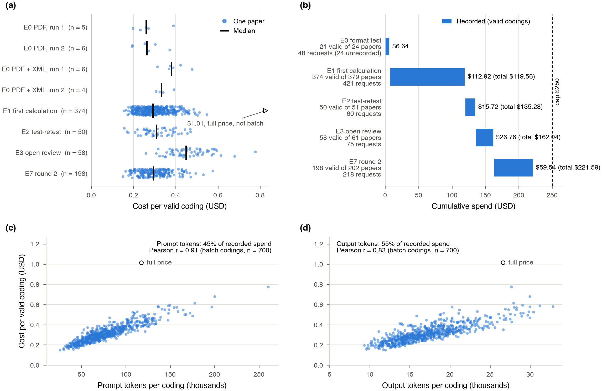
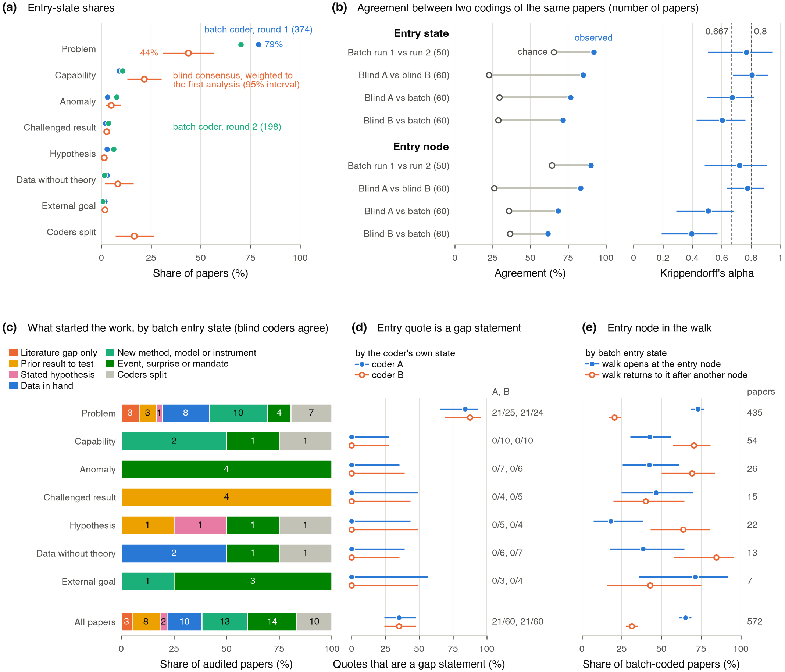
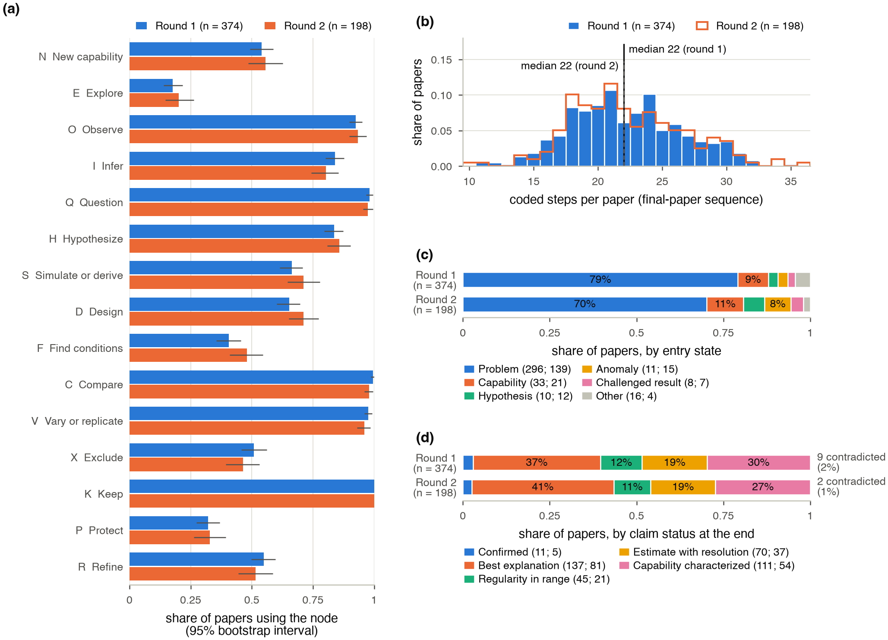
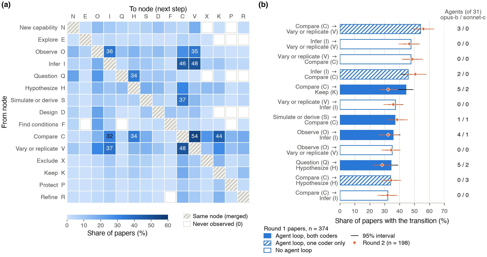
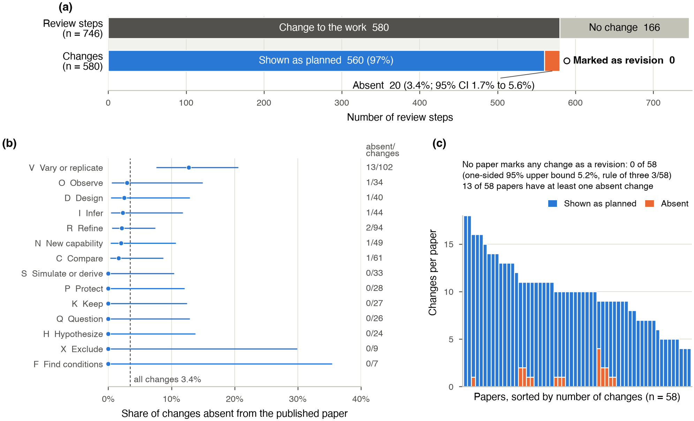
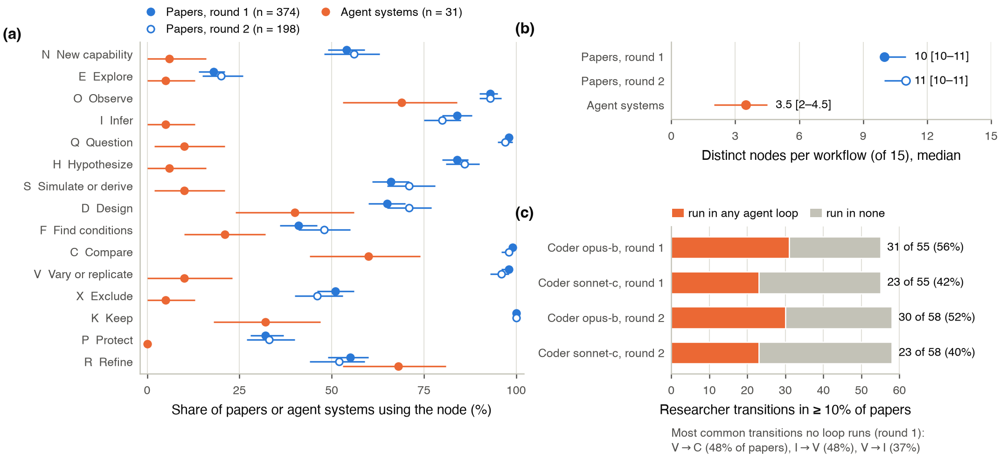

How Earth-science papers describe their research workflows: the roadmap experiments, rounds 1 and 2
Drafted v0.3 · October 27, 2026 · model-coded, no human check yet
- Data release (codings with quotes, derived tables, figure provenance; no paper texts):
data/roadmap-release/. - Short result pages: topics and journals, workflows and outcomes, peer review.
Draft v0.3, October 27, 2026. Denolle Lab metascience project. The roadmap is the lab’s staged plan for measuring inquiry in published papers (private/analysis/roadmap-plurality-loops.md); this report covers Phase 0 (a measurement instrument and its reliability), both rounds of the corpus study (round 1 exploratory, round 2 a pre-registered confirmatory test of round 1), and Phase 2b (what reporting removes, here the work done in peer review). Status: model-coded throughout; no human coding has been scored against the model yet.
State at writing. Every result below rests on the codings that pass tools/check_coding.py validate() on October 27, 2026: 374 of 525 eligible round-1 papers (tag calc1: 233 at the first analysis and 141 added by the top-up batch) and 198 of 222 eligible round-2 papers (tag r2). Nine papers (5 round 1, 4 round 2) failed validation twice and are excluded from every analysis. No batch is pending. Recorded model spend is $221.59 of the $250 cap under which these experiments ran; the PI raised the total API budget to $400 later on October 27 for the advance measure (DECISIONS.md). Round-1 numbers are at 374 papers unless marked “first analysis” or “at 233”; the frozen hypotheses of section 8 carry the values at 233 because the plan was written from them. Pooled numbers combine both rounds with round as a stratum and are descriptive, not tests.
Summary
We asked a large language model to read 2022 Earth-science papers and write down each paper’s research workflow as a walk on a graph. The graph’s vertices (nodes) are fifteen kinds of research move, such as question, observe, infer, compare, and vary and replicate. Each step also carries one of thirteen modes of inquiry, the kind of epistemic work the step serves (estimation, reconstruction from traces, methods, and so on). The coder is Claude Opus 5.5 (claude-opus-5-5) under codebook 1.5.0; every step of a coding must cite a page or paragraph locator and a quote of at most 25 words. From an OpenAlex pool of 14,223 candidate papers, round 1 preselected 600, kept 525 after an abstract screen and has 374 valid codings. Round 2 drew 277 open-access papers from the rest of the pool, at most 4 per journal, kept 222 and has 198 valid codings.
Terms used in the bullets, defined fully in sections 3 to 8: entry state, what started the work as the paper tells it; decisive mode of inquiry, the mode of inquiry of the one step without which the main claim would not exist; composition, a named overall pattern of the walk; Krippendorff’s alpha, agreement corrected for chance (1 perfect, 0 chance); q, a p value adjusted for many tests (Benjamini-Hochberg false discovery rate); rho, Spearman rank correlation; cnp, a citation percentile within the paper’s OpenAlex subfield and year; fwci, citations divided by the mean of comparable works; confirmed, round-2 q < 0.1 with the round-1 direction, under a plan frozen before any round-2 coding was retrieved or read; novelty (novelty_pair), the rarity of the paper’s pair of leading OpenAlex topics among 2017-2021 works; breadth (breadth_refs), the share of the paper’s references outside geoscience; convergent validity check, agreement between two independent measures of the same property; agent loop, the cycle an AI research system repeats.
- A pre-registered test on a second sample confirmed 12 of 43 round-1 associations, reversed none and left 31 not confirmed; few of the 12 are substantive findings. The plan (public commit b4369fe) froze the 43 associations with q < 0.1 at the first round-1 analysis (233 papers) before any round-2 coding was retrieved or read (round-2 batches submitted at 01:37 and 08:40 on October 27, plan pushed at 16:45, first coding downloaded at 20:55). The 12 are: the convergent validity check of the coder (2 rows); capability first and synthesis with breadth; subfield with the decisive mode of inquiry and with the composition, two tests that carry no direction; reconstruction in Earth-Surface Processes (3 rows resting on the same 3 round-2 papers); 2 journal-family contrasts; and one subfield row that passes by sign only (H36). Among the 31 not confirmed, 9 changed sign without reaching q < 0.1 and 2 rest on a single round-2 paper (section 8, Figure 12). Round 2 is a different population: open access only, at most 4 papers per journal, 114 journals, drawn by publisher rather than subfield rotation, so it has 3 Earth-Surface Processes papers against 37 in round 1 and 2 from The Cryosphere against 33. The plan’s groups come from the 233 first-analysis papers, which held 16 AGU and 9 Elsevier papers, so Elsevier is pooled.
- What was confirmed: some field differences in modes of inquiry, and the breadth links. Subfield is associated with the composition in round 2 under either grouping (q 0.028), and with the decisive mode of inquiry under the frozen round-1 groups (q 0.003), but not when round-2 groups under 10 papers are pooled (q 0.54); neither test says whether the same subfields carry the same modes of inquiry. Earth-Surface Processes papers (OpenAlex; here mostly stratigraphy, dated deposits and palaeoenvironment) again rely on reconstruction from traces, on 3 round-2 papers, which checks the coder more than it describes the field. The number of items the coder lists as borrowed from other fields tracks the share of references outside geoscience (round-2 rho 0.52; 0.48 for the number of fields borrowed from). That link is a validity check of the coder, not a finding about workflows. Capability first (rho 0.18) and synthesis as a mode of inquiry (−0.18) were also confirmed for breadth, weakly, and on two features the coder reproduces below the 0.667 retest threshold (alpha 0.63 and 0.65).
- What was not confirmed: every citation and novelty association, and most venue differences. Workflow length, revisits and simulation as the decisive mode of inquiry had rho 0.20 to 0.23 with cnp and fwci at the first analysis and −0.03 to 0.03 in round 2. Of 14 journal-family differences, 2 were confirmed: simulation used less in Springer Nature journals outside the Nature portfolio, and the new-capability node used more in AGU journals; both are contrasts between the journal sets that make up each family in each round, not between publishers.
- For geoscientists. Some differences between fields recur in a second sample (6 of 14 subfield associations tested); links between workflow and citation counts do not. Round 2 cannot tell whether the round-1 citation link came from selection, from the journal mix or from the population; AGU and Copernicus papers are both longer and more cited in round 1, which is one candidate.
- For NLP researchers. Of 43 associations selected at q < 0.1 from 349 exploratory tests run without prior hypotheses (245 feature-outcome, 104 field and venue), Benjamini-Hochberg expects about 4 to be false. Most of the 31 non-confirmations come from round-1 effect sizes inflated by selection, from round-2 groups too small to test, and from the change of population, not from 31 false positives. On the 141 top-up papers, which are almost all AGU (79) and Elsevier (61) papers whose full text arrived on October 27, the six citation correlations are 0.06 to 0.09. This fits inflation by selection, but the top-up differs from the first analysis in venue, so it cannot separate inflation from venue; and decisive methods with breadth went up in the top-up (0.31, against 0.22 at 233 and 0.11 in round 2).
- The coder agrees with itself on most fields; agreement with human coders is not yet measured. Coding 50 papers twice gave alpha 0.83 for decisive mode of inquiry (95% bootstrap interval 0.70 to 0.93), 0.77 for entry state (0.50 to 0.95), 0.74 for which nodes a paper uses (0.70 to 0.79) and 0.60 for composition (0.38 to 0.77). Raw agreement on entry state is 92%, but 79% of round-1 papers carry its most common label. Outcome and V status (whether the paper checks its own result) cannot be scored this way: 49 of 50 papers fall in one class. Two codings of the same paper overlap more than codings of two different papers, though less than the raw numbers suggest: node-set overlap 0.86 against 0.65 for two different papers.
- Most papers share a core of moves. Nearly every paper questions, compares, varies or replicates, and keeps a claim. The median paper has 22 coded steps in both rounds and returns to modes of inquiry it has already used. Only 2 of 374 round-1 papers contain the textbook order question, hypothesis, simulate, design, find conditions, observe, compare, even with other steps allowed in between.
- Review changes enter the paper unattributed. Of 580 review-driven changes in 58 Copernicus papers with open discussion (33 in The Cryosphere), 560 read as planned, 20 are absent, and none is marked as a revision.
- Published agent designs include few of the moves papers report most often. Against 31 published agent designs, the largest gaps are at question (98% of round-1 papers, 10% of agent systems), vary or replicate (98% against 10%), infer (84% against 5%) and hypothesize rivals (84% against 6%). The gaps hold for the 14 research systems alone, and papers and agents were coded from different kinds of text.
- Round 1 is set by full-text access. 82% of the 374 coded round-1 papers are open access, against 15% of the 151 eligible papers not coded, and the journals of the Seismological Society of America (SSA) and Oxford University Press are nearly absent (2 of 46 and 6 of 34 eligible papers coded). Round 2 is open access by design.
Recorded model spend for all experiments to date: $221.59 of the $250 cap under which they ran (budget raised to $400 on October 27, DECISIONS.md); $0.30 per paper for the main coding of each round.
1. Question, and why it matters to two fields
Two problems motivate the roadmap. Experts reach different conclusions from the same data, and much of the inquiry behind a paper never reaches the paper. The roadmap measures what papers say about how their research was done, and codes it so that human workflows and AI agent loops can be compared on the same graph.
For geoscientists. Much of Earth science works with conditions found in nature rather than set in a laboratory. An earthquake, a glacier or a storm cannot be rerun, so the field relies on reconstruction from traces, on nature repeating itself across events, and on checks such as synthetic tests (running a method on simulated data with a known answer), independent stations or a second inversion method (inversion: estimating unobserved Earth properties from measurements by fitting a physical model). Laboratory work (experimental petrology, rock mechanics, geochemistry) and numerical experiments set their own conditions, and there controls and replication take their usual meaning. Whether published papers show those checks, and whether the shape of a workflow relates to how a paper is cited or how far it reaches outside the field, are questions about the field’s own practice. They can be asked at scale only if reading papers can be automated with known error.
For NLP and AI researchers. Research agents such as The AI Scientist (Lu et al., 2026), Coscientist (Boiko et al., 2023) and the AI co-scientist (Gottweis et al., 2026) are designed and evaluated mostly from what published papers report. If papers present the workflow selectively, agents learn a cleaner process than the one people follow. This study is also an annotation experiment: a large language model (Claude Opus 5.5) as annotator of a long, technical, structured coding task (one JSON object with dozens of fields per paper), with measured test-retest consistency, an input-format ablation (rerunning with one input changed), validation by a deterministic checker (a script, not a model), and cost per document.
Six questions organize the report:
- How consistently does the model code workflows (section 4)?
- What do Earth-science workflows look like on the graph (section 5)?
- Do workflows differ by field and venue (section 6)?
- Do workflow features relate to citation, novelty and breadth, and does field or venue explain that (section 7)?
- Do the round-1 associations hold on a second sample under a plan fixed in advance (section 8)?
- What does the paper leave out: the work done in peer review (section 9) and the moves AI agents skip (section 10)?
2. Corpus

Figure 1. Stages of both rounds and screening exclusions.
Notation. Numbers in square brackets are 95% percentile bootstrap intervals: the statistic recomputed on 2,000 samples of papers drawn with replacement, unless a section says otherwise. q is a p value adjusted by the Benjamini-Hochberg procedure for the number of tests in its family (Benjamini & Hochberg, 1995; section 6): among results with q < 0.1, about 10% are expected to be false on average. cnp is the OpenAlex citation normalized percentile, a paper’s citation count as a percentile among works of the same OpenAlex subfield, year and type (0 to 1); the other outcome metrics are defined in section 7.
Pool. We drew from OpenAlex, an open bibliographic index that supplies each paper’s journal, publisher, citation counts and machine-assigned topic labels (Priem et al., 2022). The pool is every 2022 journal article with an abstract and at least 15 references in Earth-science venues that have a full-text route, split into a “core” ring (the eight OpenAlex topics of the convenor, M. Denolle, who runs the seminar and the project) and a “broad” ring (eight neighbouring Earth-science subfields): 14,223 papers (g02_pool.py). Papers with a convenor co-author are excluded from both draws.
Round 1. 600 papers preselected, 300 per ring, with equal numbers per cnp quintile (120 per quintile) and, within a quintile, subfields taken in turn (g03_preselect.py, seed 2026). The design makes the citation distribution near-uniform (median cnp 0.53 preselected and 0.56 coded, against 0.75 in the pool) and raises small subfields: the OpenAlex subfield Artificial Intelligence, which in this pool holds only the core-ring topic Seismology and Earthquake Studies, is 0.8% of the pool and 11% of the preselection.
Round 2. 277 open-access papers drawn from the rest of the pool, per ring with equal numbers per cnp quintile where the pool allowed (60 per quintile, 37 in the lowest), at most 4 per journal, round robin over publishers (g18_round2_draw.py, seed 2027): 157 journals, 12 publishers. Round 2 differs from round 1 in population as well as in sample: open access only, and spread over many more journals. The subfield rotation of round 1, which raised small subfields, was not repeated, so the small round-1 subfields shrink: among coded papers, Earth-Surface Processes goes from 37 (round 1) to 3, the seismology group filed under Artificial Intelligence from 24 to 1, and The Cryosphere from 33 to 2 (topics_journals.json composition; derived/r2/metrics.json).
Screen. Each abstract went to two independent model screeners, with a third model call settling disagreement or uncertainty (16 of 600 adjudicated in round 1, 4 of 277 in round 2). The screeners are Claude agents in a Claude Code workflow (tools/roadmap/workflows/gold-eligibility-screen.js, effort medium); the workflow does not set or record the model version. In NLP terms this is double annotation with adjudication; in a systematic review it is the eligibility step. It drops off-topic papers, reviews, and comments or replies, since the codebook codes research workflows. Round 1 kept 525 of 600 (87.5%; 54 off-topic, 12 reviews, 5 comments or replies, 4 other). Round 2 kept 222 of 277 (80.1%); the screeners agreed on 275 of 277.

Figure 2. Full text by publisher (PDF, publisher XML) and open-access share.
Full text. The coder needs the whole paper. At the first coding (October 25), 235 of 525 round-1 papers had a PDF. A re-fetch on October 27 from the University of Washington network, with the Wiley route corrected for AGU DOIs, added 192 PDFs across both rounds (144 round 1, 48 round 2; Wiley 106, Elsevier 85, Springer 1) and 103 Elsevier XML files (74 round 1, 29 round 2; refetch_2026-10-27.log). Round 1 now has a PDF for 379 of 525 (72.2%) and text of either kind for 381; round 2 has 202 of 222 (91%), high by design because it was drawn from open-access papers. Round-1 papers still without a PDF are mostly in journals of the Seismological Society of America (SSA: the Bulletin of the Seismological Society of America and Seismological Research Letters, 44), English translations of Russian-language journals that Pleiades (43) and Allerton Press (11) publish and Springer distributes, and Geophysical Journal International (GJI, Oxford University Press, 28). Publisher XML matters for NLP readers because it gives section-and-paragraph locators, so every quote can be found by string search; it exists for 190 round-1 papers and 134 round-2 papers, and 177 of the 374 coded round-1 papers were coded with it (section 3).

Figure 3. Outcome metrics and open-access share by stage, and the coverage effect.
Who got coded. Full-text access filters round 1. 82% of the 374 coded papers are open access, against 15% of the 151 eligible papers not coded, a difference of 67 percentage points [60, 74]. Coded papers are also more cited (cnp median difference +0.20 [+0.14, +0.24]), largely because many uncoded papers are in Springer Nature non-portfolio journals, including the Russian translations (median cnp 0.33 among the eligible papers of that family, against 0.52 for all eligible papers). Topic-pair rarity (novelty_pair) does not differ (+0.04 [−0.14, +0.10]), and the share of references outside geoscience (breadth_refs) is slightly lower in coded papers (−0.019 [−0.044, −0.001]). In round 2, where 198 of 222 eligible papers are coded, cnp does not differ (+0.04 [−0.09, +0.17]), but coded papers have more common topic pairs than the 24 not coded (Cliff’s delta −0.23 [−0.43, −0.03]; Cliff’s delta is P(coded > not coded) minus P(coded < not coded) over all pairs). The Figure 3 caption reports only the round-1 effects.

Figure 4. Subfield and journal family at each stage, the most frequent journals, and coverage by family.
Journals and topics. Two groupings are used throughout. Subfield is the OpenAlex subfield of the paper’s leading topic. OpenAlex assigns topics with a classifier over title, abstract, venue and citations; topics nest in subfields (Geophysics, Atmospheric Science, Oceanography) and fields (Earth and Planetary Sciences, Environmental Science). These are machine labels, not author keywords, and the subfield names can mislead:
- OpenAlex files the topic Seismology and Earthquake Studies under the subfield Artificial Intelligence, in the field Computer Science. Here that subfield holds only this topic: 25 coded seismology papers (24 round 1, 1 round 2), 20 of which have machine-learning (ML) terms somewhere in their coding and 11 in a new-capability step. This report calls it “Seismology (OpenAlex: Artificial Intelligence)”; the figures label it “Artificial intelligence (100% seismology)”.
- As coded in both rounds, Atmospheric Science is 57% the topic Cryospheric studies and observations (98 of 171 papers), that is glaciology and ice sheets rather than meteorology; The Cryosphere alone has 35 coded papers (33 in round 1). Earth-Surface Processes is geological formations (18 of 40), coastal (9) and aeolian (6) topics. Water Science and Technology is mostly watershed hydrology (20 of 26). Geophysics is led by earthquake and tectonic studies (71 of 206), geological and geochemical analysis (38) and seismic waves (34).
Journal family is the publisher group read from the DOI prefix, then the publisher name:
- AGU (American Geophysical Union) journals, which Wiley publishes, counted apart from the other Wiley journals;
- Wiley non-AGU, led in the coded round-1 set by Geophysical Prospecting (14), Geological Journal (9) and Basin Research (5), mostly applied geophysics, sedimentary geology and hydrology;
- Copernicus Publications: the EGU (European Geosciences Union) journals, such as The Cryosphere, Hydrology and Earth System Sciences and Geoscientific Model Development, plus journals Copernicus publishes for other societies, such as European Journal of Mineralogy and Scientific Drilling;
- the Nature portfolio (for example Scientific Reports, 8 coded round-1 papers);
- the rest of Springer Nature, led by Earth, Planets and Space (13), and including the Pleiades and Allerton translations;
- Elsevier (led by Ore Geology Reviews, 10); Oxford University Press (mainly GJI); SSA; and AAAS (the American Association for the Advancement of Science, publisher of Science and Science Advances).
For NLP readers: families differ in more than publisher. Their journals differ in length limits, data policies, review process, citation rates and topic, and several families mix society and commercial journals, so venue can stand in for many unmeasured properties of a paper.
The coded set is more concentrated than the pool. The effective number of journals is 1/HHI, where HHI (the Herfindahl-Hirschman index) is the sum of squared journal shares; in round 1 it falls from 67.7 in the pool to 51.2 preselected, 43.5 eligible, 39.8 with full text and 39.7 coded, and the top-5 journal share rises from 0.20 to 0.28. The Cryosphere holds 1.7% of the pool, 6.3% of eligible papers and 8.8% of coded round-1 papers (33 of 374; all 33 eligible). The leading topic “Cryospheric studies and observations” goes from 3.9% of the pool to 19.3% of coded round-1 papers. After the top-up, AGU (95 coded papers, 25%) and Elsevier (70, 19%) are close to their pool shares of 23.5% and 22.5%. At the first analysis they were not: their full text arrived in the October 27 re-fetch, after the first round-1 batch had been submitted, and the top-up coded it.
The remaining skew follows full-text access, so it follows publisher more than subfield. Bias-corrected Cramér’s V (the strength of association between two categorical variables, 0 for independence, 1 when one determines the other, corrected for the upward bias of small tables; Bergsma, 2013) is 0.76 between family and being coded, against 0.36 for subfield, among eligible round-1 papers. Among papers with full text, being coded no longer depends on family (V 0.025, q 0.43); it depends weakly on subfield (V 0.23, q 0.010) because the seismology group has 24 of 27 full-text papers coded, against 374 of 379 overall. The papers without a PDF are the SSA journals (44), the Pleiades (43) and Allerton (11) translations and GJI (28): 2 of 46 eligible SSA papers and 6 of 34 Oxford papers are coded, and the seismology group filed under Artificial Intelligence has 24 of its 61 eligible papers coded. Round 1 therefore under-represents the seismological society journals, a gap that matters for a project led from seismology.
Round 2 is more even: 111 effective journals and a top-5 share of 0.07 among the 277 drawn, 82.7 and 0.10 among the 198 coded. Its coverage is independent of subfield (V 0.0, q 1.0) but tied to family (V 0.45), through the small pooled venues that lack full text, mainly the SSA journals and Science Advances.
3. Coding method
Experiments. private/data/roadmap/EXPERIMENTS.md registers eleven experiments, named E0 to E10 throughout: E0 input-format test; E1 first coding of round 1, with its top-up batch E1b (October 27); E2 test-retest of the coder; E3 coding of the open-review record; E4 labelling of review changes against the published text; E5 papers against agent loops; E6 workflow features against outcomes; E7 round 2 and the October 27 re-fetch; E8 topics and journals; E9 entry-state evaluation; E10 round 2 as a confirmatory test.
Unit and codebook. Codebook 1.5.0 (agents/coder/CODEBOOK.md) asks for one JSON object per paper. Its core is the final_paper sequence, the paper’s steps in document order. Each step has two labels. Its node is the kind of research move, one of fifteen letters from graph v0.4.2:
- N new capability (build or characterize an instrument or method); E explore (establish that a phenomenon is real: does it repeat, does it chain); O observe; I infer a latent quantity through a forward model; Q question;
- H hypothesize rivals (state competing explanations); S simulate or derive what a rival predicts; D design the test; F find or set the conditions; C compare;
- V vary and replicate (check the result); X exclude a rival; K keep the claim; P protect the claim by revising an auxiliary (secondary) assumption instead of the hypothesis, for example attributing a misfit to unmodelled anisotropy or changing the velocity model; R refine.
Its mode of inquiry is the kind of epistemic work the step serves, named by the gain it aims at and the evidence its claims owe, one of thirteen: observation, exploration, question, hypothesis, theory, simulation, instruments, methods, synthesis (across studies), reconstruction (of past events from traces), robustness, estimation, regularities. Node and mode of inquiry share some names but answer different questions: the node says what the step does, the mode of inquiry what kind of epistemic work it does it for. A worked example from a Near Surface Geophysics paper on modelling 3D elastic wave scattering by near-surface scatterers (g22_W4210352162, step 9): node V (vary or replicate), mode of inquiry methods, provenance new, locator p. 304, action in the coder’s words: they check the forward model against the finite-difference code SOFI3D for case 7, isolating the SOFI3D scattered field by subtracting a no-scatterer run, compare traces by semblance, and report runtimes (5 min versus 218 min); quote from the paper “The results in Figure 10 indicate generally good fit between the outputs of two modelling techniques, with semblances over 0.80”.
The graph is the seminar’s (modes.qmd, inquirygraph.qmd). In this report an edge or transition is any pair of consecutive steps after merging consecutive repeats of a node; no transition is forbidden, so 15 × 14 = 210 directed transitions are possible.
Each step also carries a one-sentence action, a location, a quote of at most 25 words, and its provenance (the codebook field move): new; repeat (the same node as the step before); return_after_failure (the paper says an earlier attempt failed or mismatched and this step goes back); cited (a result taken from other groups’ work, not performed here); inherited (done in the authors’ own earlier work); in review sequences also review_forced (a referee, editor or commenter asked for it) or declined. Beyond the sequence the coder records:
- the entry state, what started the work as the paper tells it, one of seven: problem (an unsolved question the literature names), capability (a new instrument, method or archive), anomaly (a surprising observation), challenged result (a published finding the paper sets out to check), hypothesis (stated before the work), data without theory, or external goal (a mandate, benchmark or mission); and the entry node, the node where the paper enters the graph;
- the decisive node and decisive mode of inquiry, those of the single step without which the main claim would not exist;
- the composition, the named pattern the walk follows, if any: trace series (conditions found, not set, with observations repeated over independent traces such as sediment cores or landforms, ending in the best explanation among stated rivals); capability first (build the instrument or method, then pose the question); nature’s repetition (repeated natural events, such as many earthquakes, used as quasi-replicates to fit a regularity, with no power to set the conditions; Cleland, 2002); independent replication (a published result re-derived with independent data or methods; Schmidt, 2009); strong inference (rivals share one test whose possible outcomes each exclude at least one rival, repeated in turn; Platt, 1964);
- the claim status at the end: best explanation (the best among stated rivals without a decisive test); estimate with resolution (a latent quantity with its uncertainty and resolution, the scale below which the estimate cannot distinguish features); regularity in range (a relation fitted across repeated cases, with the range where it holds); capability characterized (what an instrument or method can measure, and how well); confirmed (the claim survived a test it could have failed, against stated rivals);
- the outcome, exactly one per paper: kept (a claim retained with a status), excluded (a rival rejected), contradicted (an earlier published claim shown wrong) or no conclusion;
- two gates: the claim gate asks whether the main claim faced a test it could have failed (no rivals required, so it is broader than the status confirmed); the action gate asks whether a stated hypothesis directed the main data acquisition;
- the items borrowed from other fields: concepts, methods, instruments or data from outside Earth science that the paper uses, each with its source field (codebook section 6, field
imports); - every V check the paper performs, by kind. Reproduction (same data and code rerun), replication (new data for the same question) and generalization (another context) follow the definitions of the National Academies (NASEM, 2019). The other three kinds are the codebook’s: a second method on the same data, robustness to varied parameters or processing, and a control. The rule that separates the overlapping cases: a new event, period, sample or data set addressing the same question is replication; the result tested in another region, context or task is generalization; nature’s repetition is not a check but a composition of the whole walk, where the repeated events are the data. A seismologist would call a second earthquake a new case; under this rule it counts as replication when it answers the same question. The control kind is broad. It includes synthetic and checkerboard tests (resolution or recovery tests), procedural blanks in laboratory geochemistry, reference stations or baseline periods in field studies, and null or benchmark models. The coding does not separate these, so the control share in section 5 lumps them; a sub-tag is proposed for the next codebook version.
Model and inputs. tools/code_papers.py sends each paper to claude-opus-5-5 through the Message Batches API. Settings: effort high (an API setting for how much reasoning the model spends before answering), at most 32,000 output tokens, temperature not set (API default), no thinking parameter set (output tokens include the model’s reasoning). A token is a word piece, roughly three-quarters of an English word. A batch API accepts many requests at once, processes them asynchronously and bills them at half price. Each request carries the PDF and, where it existed at submission, the publisher XML converted to located text. Of the 374 valid round-1 codings, 177 were coded from PDF plus XML text and 197 from the PDF alone, by the coder’s own record of its inputs. 71 of the round-1 XML texts are shorter than 15,000 characters, 70 of them from the Elsevier route, so they probably hold only part of the article; the coder reports using 62 of them. pdftotext, a command-line tool that extracts plain text from a PDF, is used only to check quotes and by the open-model runner of section 12. The system prompt is the codebook plus the JSON schema of the output. Its shared prefix (10,884 tokens) is marked for prompt caching: the provider keeps the processed prefix, so later requests reread it at a twentieth of the input price ($0.20 against $4 per million tokens) instead of paying again. From the round-2 top-up on, the cache is pre-warmed by one empty request before submission; the effect on cost is given below.
Validation. The output is schema-checked, not schema-constrained. A JSON schema is a formal description of the fields and allowed values of the output; this one is too large for constrained decoding (generation restricted token by token to valid JSON), so the model is asked to follow it, and every returned coding is checked afterwards by tools/check_coding.py validate(). The check enforces the schema’s fields and vocabularies, steps numbered in order, a page or locator on every step and every V check, quotes of at most 25 words, the presence of a final_paper sequence, and agreement between V steps and performed V checks. It does not check that a quote exists in the paper. Invalid or failed answers are resubmitted: 34 of the 379 round-1 papers were sent more than once (421 requests), none with the larger 64,000-token budget, which was used only for 4 open-review requests. Resubmitted papers have slightly longer walks (median 23 steps against 22). Round 1: 374 of 379 valid; round 2: 198 of 202 valid. The 9 papers that failed validation twice are excluded from every analysis: 8 have a quote over 25 words and 1 (round 2) lacks a required field (gates.registration). Only valid codings enter any analysis, except the format test, which keeps 3 codings with one overlong quote each.
Quote existence. A script check (g19_report_numbers.py, quotes.calc1_existence) searched every final-paper quote of the 374 round-1 codings in the text the coder had, after lower-casing and collapsing punctuation. For the 177 papers coded with XML, 3,952 of 4,062 quotes (97.3%) are found in the XML text or the pdftotext output, but only 2,747 (67.6%) in the XML text alone, consistent with the short Elsevier XML files above. For the 197 coded from the PDF alone, 4,162 of 4,248 (98.0%) are found in pdftotext output. 30 papers fall below 90%, where text extraction or the coder’s paraphrase is the likely cause. Round-2 quotes have not been checked this way. Existence is not entailment: no check has asked whether a quote supports its step.
Format test (experiment E0). Before scaling, six open-licence papers were coded twice each from four inputs: the PDF (arm P), the PDF plus XML text (PX), the XML text alone (X), and pdftotext text (T), 48 codings under the earlier codebook 1.4.0. Arms P and PX ran through the batch API with claude-opus-5-5; arms X and T ran as Claude agents inside a Claude Code workflow, model version not recorded, at no recorded cost, which is why only 21 of the 48 codings carry a cost. The 3 codings with an overlong quote were kept. Agreement within a format against between formats: entry state 0.96 and 0.96, node-set overlap 0.86 and 0.88, decisive mode of inquiry 0.92 and 0.92. Sequence similarity dropped between formats (node sequence by 0.076 [0.017, 0.151]), mostly in two papers whose PDF was the discussion preprint, a different text. With 6 papers this is a feasibility check, not evidence that formats are equivalent. Quotes could be verified in 100% of cases from XML and 83% from PDF text, which is why production runs attach the XML when it exists.

Figure 5. Cost per valid coding by experiment, cumulative spend against the cap, and token drivers.
Cost. Recorded cost is token usage times the price table ($4 per million input tokens, $20 per million output tokens, halved in batch), counted only for valid codings, so it is a lower bound on what was billed. By experiment: E0 format test $6.64 (21 valid codings); E1 round 1 with its top-up $112.92 (374; mean $0.30, median $0.29 per paper); E2 test-retest $15.72 (50); E3 open-review coding $26.76 (58; $0.46 per paper); E7 round 2 $59.54 (198; mean $0.30, median $0.29). Total $221.59 of the $250 cap, $28.41 left under that cap (the PI raised the total budget to $400 on October 27, DECISIONS.md). 122 billed batch requests have no cost record (outputs that failed validation, hit the output limit or were overwritten by a rerun). Across all 701 valid codings, the median was 73,170 prompt and 16,660 output tokens (round 1 alone 69,527 and 15,988; round 2 73,146 and 16,754; open-review codings 109,622 and 23,953). Output tokens are 55% of spend although they are under a fifth of the tokens, because they cost five times as much. Pre-warming the prompt cache lowered the cost of the round-1 top-up batch to $0.273 per paper, against $0.332 for the first round-1 batch: the cached instructions were read by 128 of 134 requests, against 64 of 164 before the warm-up (EXPERIMENTS.md, E1b). For NLP readers: the pattern is consistent with batch requests processed in parallel missing a cache that other requests of the same batch are still writing; one warm-up request before submission removed most of the misses. The cause was not tested. At the E1 and E3 rates, 10,000 papers would cost at least $3,019 to $4,614.
4. Self-consistency of the coder (test-retest)

Figure 6. Test-retest agreement, the format test, and Krippendorff’s alpha.
Design (experiment E2). The gold set is a stratified sample of 100 eligible round-1 papers, 50 per ring, spread over terciles of cnp, novelty_pair and breadth_refs (g05_select.py, seed 2026), reserved for human coding. Despite its name it carries no human labels yet; here it serves as the retest sample. The 51 gold papers that had full text at E1 were coded a second time, independently, from the same input (tag gold-r2); 50 pairs passed validation in both runs (one second coding failed the schema). The retest sample matches round 1 on entry state (41 of 50 are problem, 82%, against 79% of 374) but not on venue: 16 papers are Copernicus (32%, against 17% of round 1), 13 Wiley non-AGU, 9 Springer Nature, 4 Elsevier and 3 AGU, against 70 Elsevier and 95 AGU papers among the 374. The gold papers coded twice were those with full text on October 25, before the AGU and Elsevier re-fetch. For geoscientists: test-retest asks whether the same instrument gives the same reading twice; inter-annotator agreement asks whether two annotators label the same item the same way. Here instrument and annotator are the same model, sampled at the API’s default temperature, so this is test-retest of a stochastic coder. It shows whether the coder is stable. It says nothing about whether it is right, and it does not cap agreement with a human. A coder that gives the correct label with probability 0.6 and spreads the rest evenly over four wrong labels agrees with itself 40% of the time (0.6² + 4 × 0.1²) but with a human who picks the correct label 60% of the time. Errors the model repeats on every run do not show at all. With two runs per paper, per-item variance cannot be estimated; the next retest should draw 3 to 5 runs on a subset and report how stable the majority label is.
Agreement measures.
- Agreement on a categorical field (entry state, outcome, decisive mode of inquiry): the share of papers with the same value in both codings.
- Node-set overlap: the Jaccard index of the sets of nodes used, that is the number of nodes in both codings divided by the number in either. Mode-of-inquiry set overlap is the same for modes of inquiry.
- Sequence similarity: 1 minus the normalized edit distance between the two node (or mode-of-inquiry) sequences, after merging consecutive repeats. The edit distance is the number of single-step insertions, deletions and substitutions that turn one sequence into the other; it is divided by the length of the longer sequence (
tools/check_coding.py). - Between-paper baseline: the same measure averaged over every pair of two different papers’ codings (69,751 pairs of the 374 round-1 codings). Nearly every paper uses K, C, Q, V and O, so two unrelated papers already overlap. The chance-corrected value is (retest − baseline) / (1 − baseline).
- Krippendorff’s alpha (Krippendorff, 2019): agreement corrected for chance, alpha = (observed agreement − chance agreement) / (1 − chance agreement), with chance agreement from how often each category is used. When one category dominates, chance agreement is high and the same raw agreement gives a lower alpha. Common reference points are 0.667 (tentative) and 0.8 (reliable). Node presence alpha treats each paper and node as one unit (is node n used, yes or no). Intervals are bootstrap over papers (Hayes & Krippendorff, 2007).
Results. Entry state agrees in 92% of papers, entry node in 90%, outcome in 100%, decisive mode of inquiry in 86%. Against the between-paper baseline:
| Measure | Retest | Two different papers | Chance-corrected |
|---|---|---|---|
| Node-set overlap | 0.86 | 0.65 | 0.58 |
| Mode-of-inquiry set overlap | 0.81 | 0.49 | 0.62 |
| Node-sequence similarity | 0.69 | 0.33 | 0.54 |
| Mode-of-inquiry sequence similarity | 0.64 | 0.25 | 0.52 |
| Entry state agreement | 0.92 | 0.64 | 0.78 |
| Decisive mode of inquiry agreement | 0.86 | 0.15 | 0.84 |
Both acceptance gates passed (node-set overlap at least 0.7; entry and outcome agreement at least 0.8). The roadmap plan fixed these gates before E2 ran (private/analysis/roadmap-plurality-loops.md, Phase 0), but the node-set gate sits only 0.05 above what two different papers give, so passing it says little; a gate on the chance-corrected overlap would be more informative. Alpha is 0.83 for decisive mode of inquiry [0.70, 0.93], 0.77 for entry state [0.50, 0.95], 0.76 for claim status [0.60, 0.89], 0.74 for node presence [0.70, 0.79] and 0.60 for composition [0.38, 0.77]. Alpha for outcome and V status cannot be estimated: 49 of 50 papers fall in one class (kept, and full), both runs agree on the one exception, and the bootstrap interval is undefined in a third of resamples. The coder is stable on which moves a paper makes and what it concludes, less so on the order of the moves and on which named pattern the walk fits.
What is missing: the human comparison. No human coding has been scored against the model yet, so every number in sections 5 to 10 inherits the coder’s errors, and test-retest cannot detect the systematic ones. The design is fixed in DECISIONS.md (g09_human_coding_app.py): 40 of the 100 gold papers, 20 per ring, spread over impact tiers, each coded independently by two of four lab coders (Marine Denolle, Sangwoo Han, Maleen Kidiwela, Michael Hemmett; six pairs in rotation, 20 papers per coder; seed 2026). The coders see no citation metrics; they code with the earlier codebook 1.3.0, which has no V-check kinds, and rate novelty and advance blind (Novelty Dossier v1, Scientific Advance Profile v1). No coding has been returned. The roadmap plan sets the targets: alpha at least 0.67 on categorical fields (entry state, outcome, node set, mode-of-inquiry set) before model coding is trusted, and 0.8 for anything used as an outcome. Not yet decided, and proposed here: score the model against the human consensus on entry state, decisive mode of inquiry, node presence and claim status; adjudicate human disagreements by discussion; report any field below 0.667 as unreliable and revise the codebook before a third round is coded. The E4 review labels and the 4.1 audit sample are not in the human design yet.
4.1 Entry state: what the label records
Each coded paper carries one of the seven entry states of section 3, and the coder must quote the sentence that supports its choice. The model coder labelled 79% of the 374 round-1 papers and 70% of the 198 round-2 papers as starting from a problem; at the first analysis, from which the audit below was drawn, the share was 78% of 233.
That share raised a concern familiar to readers of scientific prose. Most research articles contain a gap statement in the introduction, a sentence such as “the controls on X remain poorly understood”. Swales (1990) described this as the second move of a standard rhetorical pattern: establish the field, point to a gap, then fill it. (Swales’s “move” is rhetorical; it is not a node of our graph.) If the coder quotes that sentence, every paper looks problem-driven, whatever actually set the work going. In NLP terms, the gap sentence is a surface cue the coder can key on in place of the label’s intended meaning.
We tested this with a blind audit. From the 233 round-1 codings of the first analysis we drew 60 papers, stratified by label (36 coded problem, four of each other state; numpy default_rng, seed 2026). Two further coders, A and B, re-coded the entry from the full text without seeing the original label or each other’s work. A and B are Claude agents run in Claude Code, of the same model family as the batch coder (claude-opus-5-5), not people. Besides the entry state, each recorded the operational start, meaning the thing the study could not have begun without: data already in hand, an event, a new instrument or deployment, a new method or model, a mandate, a surprising observation, a prior result to test, a stated hypothesis, or only a gap in the literature. Each coder also flagged whether its quoted sentence was a gap statement.

Figure 7. Entry state under audit.
Figure 7 summarizes the result. Both blind coders kept the problem label for 20 of the 36 problem papers (56%). They moved the rest mostly to capability (5 papers) and to data without theory (3). Labels other than problem were confirmed in 20 of 24 papers. Reweighted to the 233 papers of the first analysis, the share of problem falls from 78% to about 44% [31, 57]. The audit has not been extended to the top-up or to round 2; the Figure 7 caption compares the 44% with the 79% of all 374 round-1 papers, but its weights are those of the 233. Each audited paper is weighted by the number of round-1 papers with its batch label divided by the number audited with that label, and the interval comes from a bootstrap that resamples within each label (2,000 resamples). When a blind coder chose problem, its own supporting quote was a gap statement in 84% (A, 21 of 25) and 88% (B, 21 of 24) of cases; for the 36 papers the batch coder labelled problem, A and B each quoted a gap statement in 21 (58%), and both did in 18 (50%). No other label was supported by a gap statement (ENTRY.md section 8). Asked what started the work, the two coders agreed on “a literature gap only” for just 3 of the 36 problem papers and named a concrete object, usually data in hand or a new method, for 22.
Alpha (section 4) for entry state was 0.77 between two runs of the original coder and 0.81 [0.68, 0.92] between the blind coders, but 0.60 to 0.67 between each blind coder and the original, at or below the tentative level of 0.667. The label is consistent within one prompt and moves when the coder is asked what started the work.
We read the entry state as coded so far as a measure of how a paper frames its own beginning, not of how the work began. Neither entry on a problem nor entry on a capability correlates with a citation or novelty outcome in round 1 (|rho| at most 0.06 over 374 papers; outcomes.json), so that null result concerns framing. Entry on a capability goes weakly with broader references (rho 0.12, q 0.098); it was not among the frozen hypotheses and has not been tested on a second sample. For the next codebook version we propose keeping the framing label and adding a separate operational-start field, whose quote must name the object or act and not a gap.
Limitations of the audit. The blind coders share the batch coder’s model family, so their agreement with each other is not independent evidence, and the 44% depends on their being right. The sample has 60 papers, with only four for each rare label. The audit form asked about the operational start, which may have steered the coders away from problem. A human coding of the same 60 papers is planned but not part of the gold design yet.
5. What workflows look like

Figure 8. Node use, steps per paper, entry state and claim status, 374 round-1 and 198 round-2 papers.
What the labels record. Every label below is read from the published account. Some are framing-level by construction: entry state (section 4.1), claim status and the gates record what the text says. Others are closer to the process the paper reports, such as the nodes used and the V checks, but they too are the paper’s account, not the work (section 11, item 3). Only entry state has had a construct audit. Hypothesize rivals (H) is the next candidate: it appears in 84% of round-1 papers, while 3% enter on a hypothesis and 3% pass the action gate, which suggests the coder marks rival explanations named anywhere in the text. A blind audit of H and of decisive mode of inquiry, on the design of section 4.1, is proposed.
Nodes. Keep (K) appears in all 374 round-1 papers, compare (C) in 99%, question (Q) and vary and replicate (V) in 98%, observe (O) in 93%, infer (I) and hypothesize rivals (H) in 84% each. Explore (E), establishing that a phenomenon is real, appears in only 18%. Protect (P), revising an auxiliary assumption to keep a hypothesis, appears in 32%. Round 2 has the same order; its largest differences from round 1 are find or set conditions (F, 48% against 41%), design (D, 71% against 65%) and simulate (S, 71% against 66%).
Length and returns. The median paper has 22 coded steps in both rounds (range 11 to 35 in round 1, 10 to 36 in round 2; 20 after merging consecutive repeats of a node). Papers return to modes of inquiry they have already used, a median of 9 times, and 30% report a return after a failed attempt, in both rounds. Revisits, the steps whose node already occurred earlier in the walk (consecutive repeats included), have a median of 12 in round 1 and 11.5 in round 2; this is the revisit count used in sections 6 to 8. The merged step count is 18 in the lowest citation quintile of round 1 and 21 in the highest (21, 20 and 21 between); round 2 shows no trend (19, 21, 20.5, 21 and 19 from lowest to highest).
The textbook order. The rule is the one in g13_calc1_results.py: the merged node sequence must contain question, hypothesize, simulate, design, find conditions, observe, compare (Q, H, S, D, F, O, C) in that order, with any other steps allowed in between. Only 2 of 374 round-1 papers do, and none has the seven as a contiguous run; the round-2 share also rounds to 2%. The shorter order question, hypothesize, compare (Q before H before C, gaps allowed) is in 270 round-1 papers (72%), and Q, H, D, O, C in 73 (20%).
Entry and end. 79% of round-1 papers enter on a problem and 9% on a new capability; anomalies, challenged results, hypotheses, data without theory and external goals share the rest, 2 to 3% each, with the caveat of section 4.1. In round 2, 70% enter on a problem and 11% on a capability, and anomalies (8%) and hypotheses (6%) are more common. The difference between the rounds is small and uncertain (bias-corrected Cramér’s V 0.12, q 0.065) and mixes sampling with coding drift. Outcomes are exclusive, one per paper. Round 1: 363 papers (97%) keep a claim, 9 (2%) contradict an earlier published claim and 2 (1%) end with an excluded rival; round 2: 196 keep and 2 contradict. A paper that contradicts a published claim is coded contradicted, not kept, even though it keeps its own result. Claim status, round 1: best explanation 37%, capability characterized 30%, estimate with resolution 19%, regularity in range 12%, confirmed 3% (11 papers); round 2 is within 4 points of each. Separately, the claim gate asks only whether the main claim faced a test it could have failed (no rivals required): 15% of papers pass it in both rounds, and 3% (round 2: 2%) pass the action gate (a stated hypothesis directed the main data acquisition).
Is the entry revisited in the walk? The entry state is one label per paper, so only the entry node can recur. It returns after another node in 32% of round-1 walks (23% of problem papers, 76% of capability papers) and 30% of round-2 walks (15% and 62%; ENTRY.md section 4, column Revisited). No paper reframes its question after a failed attempt: none of the 235 return-after-failure steps of both rounds sits at Q or is followed by Q (g21_entry_state.py step 4).
Decisive mode of inquiry and composition. In round 1 the decisive mode of inquiry is methods in 24% of papers, estimation in 23%, simulation 11%, reconstruction 11%, observation 9%; in round 2 estimation leads (29%), then methods and simulation (17% each). Composition, round 1: none fits 47%, trace series 29%, capability first and nature’s repetition 11% each, independent replication and strong inference about 1% each; round 2: none fits 41%, trace series 28%, capability first 14%, nature’s repetition 11%. Neither distribution differs clearly between the rounds (q 0.55 and 0.62).
Checks. 98% of round-1 papers (365 of 374) and 96% of round-2 papers have full V status: at least one check of the result performed in the paper itself that is more than a rerun (a partial status, reruns only, does not occur; the rest have none). Kinds performed, round 1: control 87%, robustness 64%, replication 55%, second method 52%, generalization 20%, reproduction 9%; round 2 is within 4 points of each. The control share is high partly because the kind is broad (section 3): synthetic tests, laboratory blanks, reference stations and null models all count. 37% of round-1 papers and 39% of round-2 papers triangulate, with two or more checks of different kinds among replication, method and generalization.

Figure 9. Share of round-1 papers with each node-to-node transition, and the 12 most common, with round 2 as diamonds.
Transitions. 195 of the 210 possible directed transitions occur at least once in round 1. The most common are compare to vary (54% of papers; 56% in round 2), infer to vary and vary to compare (48% each), infer to compare (46%) and compare to keep (44%; 32% in round 2). The workflow is a loop of inference, comparison and checking more than a line from question to answer. Geoscientists will recognize it: invert, compare with data, test against synthetics or a second method, compare again. For NLP readers: as a sequence-labelling output the walks are long (median 22 steps over 15 labels) and dense in transitions (195 of 210 seen), so a model of them needs loops, not a linear template.
6. Workflows by field and venue

Figure 10. (a) Node use and decisive mode of inquiry by subfield and (b) workflow length, revisits and citation by journal family, both rounds with round as a stratum (572 papers; q from the round-stratified tests); (c, d) the confounding check of section 7 for the 38 round-1 associations, citation and novelty outcomes in (c) and breadth outcomes in (d), with a square on each of the 15 that the frozen plan tested on round 2 (filled: confirmed). Subfields are labelled with their dominant topic where one holds at least 60% of coded papers: Artificial Intelligence is 100% seismology, Atmospheric Science 57% cryosphere.
g20_topics_journals.py tests each workflow feature against subfield and against journal family, in three blocks: round 1 alone (exploratory), round 2 alone, and both rounds with round as a stratum. In the stratified block the feature is shuffled within round only, so a difference between the rounds in field mix or in coding cannot pass for a field or venue effect. Binary and categorical features get a permutation chi-square test; counts get a Kruskal-Wallis test (Kruskal & Wallis, 1952). A permutation test builds its null distribution by shuffling the group labels many times (5,000 here) and asks how often a shuffle gives an association as strong as the observed one; it assumes no distribution. Because many tests are run, p values are adjusted within each block by the Benjamini-Hochberg procedure (Benjamini & Hochberg, 1995): a result with q < 0.1 belongs to a set in which about 10% of findings are expected to be false on average, provided the tests are independent or positively dependent. Effect sizes are bias-corrected Cramér’s V for categorical features and epsilon squared, the share of rank variance explained by the grouping, for counts. Groups with fewer than 10 coded papers are pooled; in round 1 that is Ocean Engineering (6) among subfields, and AAAS 1, Oxford 6, SSA 2 and other 1 among families.
Round 1 (374 papers): 56 of 116 tests have q < 0.1. Round 2 alone (198 papers): 4 of 106. Both rounds with round as a stratum (572 papers): 45 of 130. Round 2 alone finds little partly because its subfield groups are small: Earth-Surface Processes has 3 round-2 papers, Geochemistry and Petrology 8, Water Science and Technology 9 and the seismology group 1, so g20 pools them. The confirmatory test (section 8) does not pool: it keeps the round-1 groups, so Earth-Surface Processes enters with 3 papers and the seismology group with 1.
The round-1 results at 374 papers:
- Field. Seismology (OpenAlex: Artificial Intelligence) papers have methods as the decisive mode of inquiry in 67% (16 of 24; 46 points above the rest) and use the new-capability node in 88%. The same 24 perform the most kinds of check (median 4, against 3 elsewhere). Earth-Surface Processes papers (geological formations, coastal and aeolian topics) rely on reconstruction from traces: reconstruction is decisive in 38% (30 points above the rest) and the trace-series composition fits 59% (34 points above). Water Science and Technology papers, mostly watershed hydrology, rarely protect a hypothesis (P in 6%, 28 points below).
- Venue. Workflow length differs by family (epsilon squared 0.089): median 24 steps for Copernicus, 23 for AGU, 19 for Wiley non-AGU. Revisits follow (0.071). Copernicus papers use protect in 52%, 23.5 points above the rest (24.3 at the first analysis); Springer Nature non-portfolio papers use simulation as a mode of inquiry 29 points less often; Elsevier papers fit the trace-series composition 28 points more often. Because families differ in topic as well as in format (section 2), these are family contrasts, not pure venue effects.
- Both rounds, round as a stratum (Figure 10a, b). Median steps: Copernicus 24, Nature portfolio 23, AGU, Elsevier and Springer Nature non-portfolio 22, Wiley non-AGU 20 (epsilon squared 0.058, q 0.0015). Median cnp: Nature portfolio 0.71, AGU 0.62, Copernicus 0.60, Wiley non-AGU 0.44 (epsilon squared 0.062 by family, q 0.0003, against 0.026 by subfield, q 0.067).
- Entry state. It does not differ by family (q 0.34). It differs by subfield (V 0.14, q 0.013), driven by the 6 pooled Ocean Engineering papers, 5 of which enter on a capability.
What round 2 says. Section 8 tests on round 2 the 28 field and venue associations that had q < 0.1 at the first analysis (233 papers). Field differences are confirmed more often than venue differences: 6 of 14 subfield associations and 2 of 14 family associations. Of the 6, two are whole-variable associations with no direction (composition and decisive mode of inquiry by subfield), three rest on the same 3 round-2 Earth-Surface Processes papers, and one passes by sign only. The seismology contrast could not be tested, because round 2 has one seismology-group paper.
The AGU selection of the first analysis is gone. At the first analysis the coded AGU papers were the open-access subset whose PDF existed on October 25 (draft v0.2, section 6). After the top-up, 95 of the 98 eligible AGU papers are coded, 67 of them open access, with median cnp 0.65: 48 in the Journal of Geophysical Research sections, 25 in Geophysical Research Letters (GRL, a letters journal with a length limit) and 22 in other AGU journals (report_numbers.json, calc1.agu_selection). AGU papers still have longer workflows than Wiley non-AGU papers (median 23 against 19 steps) without that selection, but round 2 did not confirm the length differences by family (section 8). Comparing length within letters and within full-length journals separately is still to do.
For NLP readers, the field results are a sanity check: a coder that gives Earth-Surface Processes papers reconstruction and the seismology group methods responds to paper content rather than filling a fixed template. In round 2 the decisive mode of inquiry is again associated with subfield under the frozen groups (H42), but that test carries no direction, so whether the same subfields carry the same modes of inquiry was not tested; comparing the subfield-by-mode-of-inquiry residuals of the two rounds would test it (exploratory, not run). This does not show that the codings are correct. The OpenAlex classifier and the coder respond to the same title, abstract and method vocabulary (20 of the 25 seismology papers have ML terms in their codings), and a model could assign these labels from the abstract alone. An ablation that codes a subset from title and abstract only would show how much of the field pattern needs the full text; only a human comparison can show correctness. For geoscientists, the venue results raise a question this design cannot answer. Longer workflows in Copernicus and AGU papers may reflect what authors do, what those journals let them write, or what the coder can see in longer papers. Round 2, spread over 114 journals, does not reproduce the length ranking. That is consistent with a property of the few large round-1 journals rather than of publishers, and also with low round-2 power for epsilon squared; recomputing the round-1 family rows without The Cryosphere and GRL (exploratory, not run) would separate the two. GRL, a letters journal, would if anything shorten AGU workflows.
7. Workflows and outcomes
Outcome metrics. All come from OpenAlex through g04_metrics.py, retrieved October 2026, about four years after publication.
| Metric | Definition |
|---|---|
| cnp (impact) | OpenAlex citation normalized percentile: the paper’s citation count as a percentile among works of the same OpenAlex subfield, publication year and type, 0 to 1. The comparison set follows the OpenAlex subfield label, so the 24 round-1 seismology papers filed under Artificial Intelligence are ranked against 2022 AI works; their median cnp (0.70) is not comparable with other subfields. Round 1 was drawn with equal numbers per cnp quintile, so the sample is stratified on this outcome (section 2). |
| fwci (impact) | Field-weighted citation impact: citations divided by the mean citations of comparable works (same subfield, year, type); 1 is the world average. OpenAlex computes it; g04_metrics.py does not record its citation window. Citations are right-skewed, so the median paper sits below 1. The same Artificial Intelligence caveat applies. |
| novelty_pair (novelty) | Rarity of the paper’s two leading OpenAlex topics appearing together in 2017-2021: −log10(1 + number of 2017-2021 works tagged with both). Higher is rarer. A proxy for an unusual combination, not a measure of novelty. |
| breadth_refs (breadth) | Share of the paper’s classified references whose primary topic is outside geoscience. Geoscience means OpenAlex fields 19 (Earth and Planetary Sciences) and 23 (Environmental Science), corrected by a hand audit that reassigns geoscience topics filed elsewhere (private/analysis/success-set/breadth/topic_audit.csv). |
| breadth_citers (breadth) | Share of citing works 2022-2026 outside geoscience, self-citations removed; defined only for papers with at least 10 such citers (97 of 374 in round 1, 55 of 198 in round 2). Tested in g17; too sparse for the field and venue analyses. |
| advance | Blind rating of the contribution by the four lab coders of section 4, on the Scientific Advance Profile v1 (ratings v1.0.0). Not yet measured. |
cnp and fwci are field-normalized by OpenAlex. novelty_pair and breadth_refs are not, so they differ by subfield from field structure alone. In round 1 the medians are cnp 0.563, fwci 0.57, novelty_pair −3.847 and breadth_refs 0.028; in round 2 they are 0.554, 0.58, −3.846 and 0.038. cnp and fwci rank-correlate at 0.99, so they are one impact signal, not two. The other outcomes are nearly independent of each other (|rho| at most 0.10, except novelty_pair with breadth_refs at 0.20 and the two breadth measures at 0.31).
Because round 1 has equal numbers per cnp quintile, the cnp distribution in the sample is flatter than in the pool. The correlations with cnp below describe this stratified sample and are not estimates for the pool; round 2 is stratified the same way (equal numbers per cnp quintile within each ring, g18_round2_draw.py), so neither round estimates the pool’s cnp distribution; a pool-level estimate would need design weights. Both rounds are drawn with equal numbers per cnp quintile (round 2: 37 in the lowest, 60 in the others), so the citation range is similar by design; equal medians alone would not show this. The rounds differ in venue and field mix (section 2), which bears on the field and venue rows of section 8 more than on the citation rows.

Figure 11. Spearman correlations for 274 feature-outcome tests on the 374 round-1 papers, the 38 with q < 0.1, and correlations among outcomes.
Tests (experiment E6). g17_outcomes.py correlates workflow features (listed in the appendix) with the five outcomes. At the first analysis (233 papers) it ran 245 Spearman rank correlations on 49 features, and 15 had q < 0.1; those 15 are the feature-outcome hypotheses that section 8 tests. On the 374 round-1 papers it runs 274 correlations on 55 features (more binary features pass the filter of 10 to n − 10 papers; entry on a hypothesis passes it for every outcome except breadth_citers). Each correlation has a 95% bootstrap interval (2,000 resamples of papers; a bootstrap recomputes the statistic on samples drawn with replacement to see how much it varies), a two-sided permutation p (5,000 shuffles), and a Benjamini-Hochberg q over all tests of the run. At 374 papers, 38 have q < 0.1, of which at most about 3.8 (0.1 × 38) are expected to be false under the Benjamini-Hochberg assumptions; |rho| ranges from 0.12 to 0.55. Under the stricter Benjamini-Yekutieli correction, which is the Benjamini-Hochberg q multiplied by the sum of 1/i over the tests (6.19 for 274) and is valid under any dependence (Benjamini & Yekutieli, 2001), 8 of the 274 pass (smallest q 0.057); at the first analysis none of the 245 did. The dependence here is strong: cnp and fwci correlate at 0.99, and features such as steps, revisits and distinct nodes overlap. With 5,000 permutations no p can fall below 0.0002, which also bounds the smallest q. The 374 include the 233, so the round-1 values at 374 are not an independent check of the first analysis. The analyst choices below (the pooling cutoff of 10, the stratified estimator, the reference-count adjustment) were made after seeing round-1 data. Both rounds are also reported pooled for description, with ranks and permutations within round: 42 of 310 tests have q < 0.1 over 572 papers; that analysis is not part of the test of section 8.
The 15 associations of the first analysis, each given as first analysis (233 papers) / round 1 now (374) / round 2 (198):
- Breadth. Methods as decisive mode of inquiry (0.22 / 0.26 / 0.11), capability first (0.22 / 0.20 / 0.18) and more kinds of V check (0.20 / 0.16 / 0.12) go with broader references. Using synthesis as a mode of inquiry (−0.22 / −0.17 / −0.18), more distinct modes of inquiry (−0.22 / −0.16 / 0.02) and the infer node (−0.18 / −0.18 / −0.02) go with narrower ones.
- Impact. More steps (0.23 with cnp and with fwci / 0.17 and 0.18 / 0.02 and 0.03), more revisits (0.21 and 0.22 / 0.17 and 0.17 / 0.01 and 0.01) and simulation as the decisive mode of inquiry (0.20 and 0.21 / 0.15 and 0.16 / −0.03 and −0.03) go with higher field-normalized citation in round 1. Because cnp and fwci are one signal, these are three associations, not six.
- Novelty. Papers using observation as a mode of inquiry have rarer topic pairs (0.21 / 0.15 / 0.01).
At 374 papers, 23 associations outside these 15 also reach q < 0.1, among them trace series (−0.20) and reconstruction as a mode of inquiry (−0.17) with narrower references, and the number of novelty claims with citation percentile (0.16). None of the 23 was in the plan, and none has been tested on an independent sample.
A check of the coder, not an outcome result. The two largest correlations are between the items borrowed from other fields and breadth_refs (rho 0.57 / 0.55 / 0.52) and between the number of fields borrowed from and breadth_refs (0.51 / 0.51 / 0.48). The coder lists borrowed concepts, methods, instruments or data from the paper’s text; breadth_refs counts references outside geoscience from the OpenAlex reference list. These are two measures of the same thing, one from the text and one from the reference list, so their agreement is a convergent validity check of the coder, not a finding about workflows and outcomes. It holds at 0.48 to 0.54 within every stratification of round 1 below and at 0.45 to 0.52 within subfield and within family in round 2, and the count repeats well between runs (Spearman 0.87 between the two codings of the retest sample).
Reference count. Longer papers have more references, and papers with more references are cited more. In round 1, reference count correlates with cnp at 0.29 and with steps at 0.26. With reference count held fixed by partial correlation (feature and outcome ranks each regressed on the rank of reference count, then the residuals correlated), steps against cnp falls from 0.17 to 0.11, revisits from 0.17 to 0.10, and decisive simulation from 0.15 to 0.14.
Field or venue: the confounding check. g20_topics_journals.py recomputes associations within strata. Ranks are centred inside each subfield, each journal family, or each subfield-by-family cell, so only variation inside a stratum counts, and the permutation shuffles outcomes only within strata. An association survives if it keeps its sign and has q < 0.1 over the stratified tests (Figure 10c, d). The run behind this draft rechecks the 38 associations with q < 0.1 of the current g17 run on the same 374 round-1 papers (114 stratified tests). Within subfield, 31 of 38 survive (25 with a bootstrap interval excluding 0). Within journal family, 36 of 38 survive (35). Within subfield × family, 24 of 38 survive (21).
What falls out depends on the stratification. Within subfield, the 7 that drop are all breadth or novelty rows: items borrowed from other fields and fields borrowed from, each with novelty_pair; node N (new capability) and an entry on a new capability, each with breadth_refs; claim gate yes, decisive methods and steps, each with breadth_citers (97 papers with at least 10 citers). These outcomes are not normalized by field, unlike cnp and FWCI, so a field difference in them can pass for a workflow association. Within family, the 2 that drop are distinct modes of inquiry with cnp and with FWCI (0.13 and 0.14 overall, 0.08 and 0.09 within family). Within subfield × family those 9 drop and 5 more: decisive estimation, node H and distinct modes of inquiry with breadth_refs, reconstruction as a mode of inquiry with novelty_pair, and revisits with breadth_citers. The 15 associations of the first analysis, which the frozen plan tested on round 2, survive in 15, 15 and 14 cases (13, 15 and 12 with an interval excluding 0); the one that fails is distinct modes of inquiry with breadth_refs within subfield × family. Surviving here did not predict round 2: of the 14 that survive all three stratifications, 4 were confirmed, all with breadth_refs (squares in Figure 10c, d; section 8). The other 23 have no out-of-sample test.
Stratifying by subfield leaves the citation links unchanged; stratifying by family weakens them. Steps against cnp is 0.174 in round 1, 0.175 within subfield and 0.109 [0.007, 0.212] within family (q 0.058); revisits against cnp is 0.168, 0.172 and 0.111. A permutation q and a bootstrap interval can disagree near the threshold because they answer different questions: the permutation p asks how often shuffled outcomes give an association this strong, while the interval describes how much the estimate varies when papers are resampled. A likely reason for the family effect is in section 6: Copernicus and AGU papers have longer workflows and are also more cited. Median cnp is 0.65 for AGU and for Copernicus and 0.40 for Wiley non-AGU (epsilon squared 0.087 by family, against 0.029 by subfield, q 0.24). Decisive simulation against citation holds within subfield (0.14), within family (0.12 to 0.13) and within subfield × family (0.13).
Three cautions. First, the strata are small (9 subfield groups, several with 17 to 29 papers), so this check has little power to detect confounding by subfield. Second, the estimator matters: recomputing ranks inside each family, instead of centring pooled ranks, gives 0.115 [−0.002, 0.233] rather than 0.109 for steps against cnp (report_numbers.json, confounding.family_estimators). Third, round 2 does not settle it: there the correlation of steps with cnp is 0.02 overall and −0.01 within family (section 8), and round 2 cannot tell selection, population and venue apart. Neither stratification makes this a causal statement. Citations at four years measure attention, and a longer workflow may simply be a longer paper.
8. Round 2: confirmatory test
Design (experiment E10). On October 27, 2026 the principal investigator (PI) decided that round 1 is exploratory, that round 2 tests the round-1 associations, and that both rounds are also reported pooled for description, with round as a stratum. g23_confirmatory.py freeze read the round-1 results of the first analysis (233 papers) and wrote the plan, preregistration/round2-confirmatory.json, committed in the public repository as b4369fe. The selection rule (every association with q < 0.1 at the first analysis) was the only rule considered. The plan used 233 papers rather than 374 because the top-up batch (msgbatch_01EsvmQCFDiY2ido76NMGZK3, submitted 10:23) had not been collected at the freeze; its codings were written to disk from 20:57 (file modification times), so the top-up was also unseen data at the freeze, and its use in Interpretation item 3 is post hoc. The plan’s groups come from those 233 papers, which held only 16 AGU and 9 Elsevier papers: Elsevier is not a named family (the plan names AGU, EGU/Copernicus, Springer Nature non-portfolio, Wiley non-AGU and Nature portfolio), so round 2’s 29 Elsevier papers go to “pooled small groups” with AAAS, Oxford, SSA and other, and H21 (new capability in AGU) rests on 16 open-access AGU papers in round 1. The g18 round-2 draw (open access only, at most 4 per journal) was designed before the confirmatory decision and was not sized for these hypotheses; round-2 group sizes could have been read from derived/r2/metrics.json, written at 00:15 that day.
- Guard. The freeze refuses to run if
private/analysis/codings/api/r2/holds any coding file; the plan records 0 round-2 codings at freeze. The two main round-2 batches had been submitted earlier that day (01:37 and 08:40, local time;report_numbers.json,r2.batch), so the model may already have coded papers on the provider side, but no output had been collected: the plan was pushed at 16:45 and the first round-2 coding file was written at 20:55. Nothing from round 2 had been read. The guard checks only for coding files, not for collected batches instate.json; a future freeze should also refuse whenstate.jsonlists a collected batch with the confirmatory tag. Commit dates are set by the author, so a server-side timestamp for b4369fe (a GitHub push event, kept 90 days, or a Software Heritage or Zenodo archive) should be recorded. - Hypotheses. 43: H01 to H15 are the 15 feature-outcome associations of section 7 with q < 0.1 at the first analysis, predicted to keep their sign; H16 to H43 are the 28 field and venue associations of section 6 with q < 0.1 at the first analysis, 14 by journal family and 14 by subfield. For a binary feature the prediction is that the round-1 leading group (the named group with the largest rate difference from the rest) differs from the rest with the same sign in round 2. For a count it is that round-2 group medians rank the shared groups in the round-1 order (Spearman correlation of the medians above 0). A whole categorical variable (all levels of the composition, or of the decisive mode of inquiry) carries no direction.
- Rule. One family of 43 tests, with Benjamini-Hochberg q over the 43 round-2 permutation p values. A hypothesis is confirmed when q < 0.1 and the predicted direction holds, reversed when q < 0.1 and the direction is opposite, and not confirmed otherwise. For binary and categorical rows q comes from a permutation chi-square across all groups, so the direction check on one group sits on top of an omnibus test. Effect sizes come with 95% bootstrap intervals. The plan states no power and no smallest effect of interest.
- Data and code. The 198 round-2 papers with a valid coding and OpenAlex metrics, with no other exclusion; the same features, outcomes and statistics functions of g17 and g20, whose sha256 the plan records together with those of
check_coding.pyand the codebook; 2,000 bootstrap resamples, 5,000 permutations, seed 2027. Groups are the round-1 named groups; a round-2 paper in any other subfield or family goes to “pooled small groups”. Unlike g20’s round-2 block, the test does not pool small round-2 groups. - Two invocations, one output, one post-freeze change.
g23_confirmatory.py testwas invoked twice after round 2 was collected. The first stopped inwrite_jsonwith a serialization error, before any result was written or shown. The only code change after the freeze (public commit cb6dcfd) is two lines in g23 that convert numpy booleans to Python booleans so the results can be written as JSON; the second invocation wroteconfirmatory/results.json, which records the plan’s sha256 (it matches).bool()keeps the truth value, and the generators are seeded (2027 for g17, crc32-named generators in g20), so the second invocation reproduces what the first would have written. The test does not compare the plan’sinputs_sha256with the g17 and g20 code it imports, and current g17 and g20 differ from the frozen hashes; a comparison of every top-level function and constant of b4369fe with the current files shows that only functions added after the freeze,main()andreport()changed, none thattest()calls, andcheck_coding.pyand the codebook match their frozen hashes (checked by reading the code, not by rerunning the test). The frozen round-1 inputs are in private commit abf4cf7.
For NLP readers, this is a held-out test with the hypothesis list, decision rule and code fixed before the test data were seen, the analogue of freezing the metric before evaluating on a test set drawn from a shifted distribution (open access only, many more journals, few papers in the small round-1 subfields); a failed confirmation tests transport to a new population as much as replication. Both rounds were coded by the same model under the same codebook, one draw per paper at the default temperature, so every verdict is conditional on one coder: a confirmation shows that a regularity of coder plus OpenAlex labels is stable, not that workflows are. The subfield rows are the most exposed, since the coder sees journal and field vocabulary and the OpenAlex classifier reads the same title and abstract; a field prior of the coder would recur in any sample. For geoscientists, it is the difference between finding a pattern in one catalogue and predicting it in a second catalogue from different networks and regions.

Figure 12. The 43 frozen associations: verdicts by kind (top); feature-outcome correlations (a); field and venue effect sizes for counts (b) and for binary and categorical features (c), first analysis (233 papers) against round 2 (198). The caption gives what the 12 confirmed rows are, the population difference between the rounds and exact intervals for leading groups under 10 papers.
Results. 12 confirmed, 0 reversed, 31 not confirmed; among the 31, 9 changed sign without reaching q < 0.1 (H05, H06, H12, H27, H28, H29, H33, H37, H38), 2 count rows have an undefined direction (H23, H26) and 2 rest on a single round-2 paper (H31, H39). By kind: citations 0 of 6, novelty 0 of 1, breadth 4 of 8, subfield 6 of 14, journal family 2 of 14. What the 12 are: 2 convergent validity checks (H01, H02); 2 whole-variable associations with no direction (H41, H42); 3 rows on the same 3 round-2 papers (H30, H32, H35); 1 by sign only (H36); and 4 directional confirmations on the full sample or a leading group of at least 20 papers (H03, H11, H20, H21). Sensitivity, recomputed from the p values in results.json (the test was not rerun): under Benjamini-Yekutieli (factor 4.35 for 43 tests), 6 of 43 are confirmed (H01, H02, H20, H32, H35, H42), and both substantive breadth links drop out; without the two validity-check rows, 10 of 41; without the 9 rows whose round-2 leading group has under 10 papers (H30, H31, H32, H34, H35, H36, H37, H39, H40), 8 of 34 (H01, H02, H03, H11, H20, H21, H41, H42). Read with three classes rather than two, the 43 are 12 confirmed (4 of them on round-2 leading groups under 10 papers), 26 not confirmed on a whole-sample test or a leading group of at least 10 papers, and 5 not confirmed and untestable in practice (leading group of 1 to 9 papers: H31, H34, H37, H39, H40). The six citation hypotheses are three distinct associations, since cnp and fwci correlate at 0.99. Values below are round-1 at 233, then round 2.
- Breadth (4 of 8 confirmed). Items borrowed from other fields (H02; rho 0.566, then 0.515; q 0.003), fields borrowed from (H01; 0.512, then 0.478; q 0.003), capability first (H03; 0.217, then 0.176; q 0.056) and synthesis as a mode of inquiry (H11; −0.222, then −0.175; q 0.058). Capability first and synthesis have retest alpha 0.63 and 0.65, below the 0.667 threshold. Capability first may share mechanism with the validity link (a method imported from computer science or physics shows up both as a borrowed item and as an outside reference), and synthesis has a mechanical reading (syntheses cite much in-field literature); a partial correlation of capability first with breadth_refs that controls for the borrowed-from-other-fields count would test the first (exploratory, outside the plan, not run). Not confirmed with the predicted sign but q above 0.1: decisive methods (0.111, q 0.27), kinds of V check (0.116, q 0.26) and the infer node (−0.017, q 0.94). Not confirmed with the opposite sign: distinct modes of inquiry (0.022, q 0.91).
- Citations and novelty (0 of 7). The six citation hypotheses (steps, revisits and decisive simulation, each with cnp and with fwci) had rho 0.20 to 0.23 at 233 and have −0.031 to 0.026 in round 2. Their round-2 upper ends are 0.126 to 0.169: they exclude the first-analysis values and, narrowly, the 374-paper values (0.15 to 0.18; steps with fwci is 0.178 at 374 against an upper end of 0.169), but they include 0.06 to 0.09. Two citation rows (H05, H12) and the novelty row end below 0.15; none ends below 0.10. Observation as a mode of inquiry with topic-pair rarity went from 0.207 to 0.005.
- Subfield (6 of 14 confirmed). The decisive mode of inquiry as a whole (H42; bias-corrected V 0.21, q 0.003) and the composition as a whole (H41; V 0.19, q 0.028); in Earth-Surface Processes, reconstruction as a mode of inquiry (H35, q 0.022), reconstruction as the decisive mode of inquiry (H32, q 0.006) and the trace-series composition (H30, q 0.033) above the rest; in Geochemistry and Petrology, simulation as a mode of inquiry below the rest (H36, q 0.082). Four cautions apply. H42 is confirmed under the frozen round-1 groups; with round-2 groups of fewer than 10 papers pooled (g20, round 2 alone) the decisive mode of inquiry does not differ by subfield (V 0.10, q 0.54), so this confirmation rests largely on the 3 Earth-Surface Processes and 1 seismology papers; composition holds either way (q 0.028). H41 and H42 carry no direction, so they do not show that the same subfields carry the same modes of inquiry. The Earth-Surface Processes rows rest on 3 round-2 papers, all coded with reconstruction as decisive and with trace series: a radiocarbon study of rhizoliths in dunes (Acta Geochimica, topic Aeolian processes), an ammonite biostratigraphy of drowning phases in the Alpstein (Swiss Journal of Geosciences, topic Geological formations and processes) and a cave palynology and palaeoenvironment study (Journal of Cave and Karst Studies, topic Karst Systems and Hydrogeology). These are stratigraphy and palaeoenvironment papers where reconstruction is the topic itself, so agreement between the topic label and a reconstruction coding checks the coder; it is not a field result. The exact 95% interval for a rate of 3 of 3 is [0.29, 1.00]; the bootstrap interval of the rate difference is degenerate, because every resample of 3 of 3 is 3 of 3. The Geochemistry and Petrology row passes on the association across all subfields (V 0.19), while its own rate difference is −0.005 [−0.39, 0.39] on 8 papers, so its direction holds by sign only. The rule cuts the other way too: a reversal needs q < 0.1 on the whole-variable test, so H38 (node I higher in Oceanography) is not reversed, although Oceanography’s round-2 difference has the opposite sign with an interval excluding 0 (−0.23 [−0.46, −0.00], 20 papers); H33 is similar (−0.20 [−0.42, 0.03]). Not confirmed: methods as decisive and the new-capability node in the seismology group (1 round-2 paper); estimation and the infer node in Oceanography (opposite sign); the others with q above 0.1.
- Journal family (2 of 14 confirmed). Simulation as a mode of inquiry is less common in Springer Nature non-portfolio journals (H20; 50 round-2 papers, rate 0.38, 17 points below the rest, q 0.021), and the new-capability node is more common in AGU journals (H21; 29 papers, rate 0.72, 20 points above, q 0.033). A confirmed family row is a contrast between journal sets, not between publishers. The Springer Nature non-portfolio group is led in round 1 (233 papers) by Earth, Planets and Space (13), Pure and Applied Geophysics (3) and International Journal of Earth Sciences (3), and in round 2 by open-access titles such as Swiss Journal of Geosciences, Geoscience Letters, Earth, Planets and Space and Terrestrial, Atmospheric and Oceanic Sciences (4 each), then Journal of Seismology and Physics and Chemistry of Minerals (3 each); the paywalled translations are absent from round 2, and the mineralogy and petrology titles may carry a subfield effect. The AGU group is 16 papers in round 1, spread over JGR Earth Surface and JGR Solid Earth (3 each), GRL and Tectonics (2 each), and 29 in round 2, led by JGR Atmospheres, Earth’s Future, Earth and Space Science and G-Cubed (4 each). Not confirmed: all seven count features, among them workflow length (H29), where the round-2 group medians rank the families slightly against the round-1 order (Spearman correlation of medians −0.105), and revisits (−0.216); protect in Copernicus (H22; 34%, 2 points above the rest, against 24 points in round 1); and four other binary rows, among them capability first in AGU and decisive reconstruction in Wiley non-AGU, whose round-2 differences keep the round-1 sign on 29 and 22 papers without reaching q (q 0.36 and 0.41), so they are not shown to be absent.
Interpretation. Four readings, not exclusive, plus the coder.
- Population difference. Round 2 is open access only, with at most 4 papers per journal, and its 198 coded papers come from 114 journals. Its venue and field mix differs from round 1: 50 Springer Nature non-portfolio papers against 44 of 374 (25% against 12%), AGU 15% against 25%, and 3 Earth-Surface Processes papers against 37. Venue contrasts found in a few large round-1 journals (The Cryosphere, 33 papers; GRL, 25) need not carry over to many small ones, and subfield contrasts cannot be tested where round 2 has almost no papers. Both rounds are drawn with equal numbers per cnp quintile, so the citation range is similar by design. Inputs also differ: 123 of the 198 round-2 codings (62%) were made with publisher XML, against 177 of 374 in round 1 (47%;
report_numbers.json,text.by_round.reported_route), and E0 found that the node sequence changes between formats, which could move step counts and revisits independently of the papers. - Power. The round-2 intervals for the citation rows have half-widths of 0.14 to 0.16. They exclude the first-analysis size (0.20 to 0.23) and, narrowly, the 374-paper values (0.15 to 0.18), and include 0.06 to 0.09, so round 2 excludes the selected round-1 estimate but not a correlation of 0.05 to 0.10. Post hoc power at n = 198 (Fisher z, two-sided; computed from the plan’s effect sizes, not part of the plan): for rho 0.20, 0.81 at alpha 0.05, 0.42 at the first-rank BH threshold (0.1/43 = 0.0023) and 0.74 at the realized threshold (12 × 0.1/43 = 0.028); for rho 0.15, 0.56, 0.17 and 0.46; for rho 0.075, 0.18, 0.02 and 0.13. Detecting rho 0.08 at alpha 0.05 with 80% power needs about 1,200 papers, and rho 0.06 about 2,200, 6 to 11 times round 2, and more under a BH family of 43. The binary subfield rows have much less power, since their round-2 leading groups hold 1 to 20 papers.
- Regression to the mean (post hoc). The 43 were selected for passing q < 0.1 among 349 exploratory tests, and estimates selected that way are inflated. On the 141 top-up papers, which are almost all AGU (79) and Elsevier (61) papers whose full text arrived on October 27 (the first analysis held 16 AGU and 9 Elsevier papers), the six citation correlations are 0.06 to 0.09, against 0.20 to 0.23 at 233, and the round-1 values at 374 (0.15 to 0.18) mix the two. This fits inflation by selection, but the top-up differs from the first analysis in venue, so it cannot separate inflation from venue. The top-up also goes against uniform shrinkage: decisive methods with breadth is 0.31 there, against 0.22 at 233 and 0.11 in round 2. The breadth link that held moved least (items borrowed from other fields: 0.566 at 233, 0.480 in the top-up, 0.515 in round 2).
- The venue confound found in round 1. Within journal family the round-1 correlation of steps with cnp fell to 0.11 (section 7), so part of it may be the AGU and Copernicus contrast in both length and citation. Round 2 spreads its papers over many journals, and there the correlation is 0.02 overall and −0.01 within family. Round 2 cannot tell this reading from the other three.
- One coder. Every verdict is conditional on one model coder, and test-retest cannot detect a field prior that recurs in every sample. The cheapest independent checks are the open-weight runner (
tools/code_papers_open.py, no Anthropic spend) on the round-2 papers behind the confirmed rows (Earth-Surface Processes 3, Geochemistry and Petrology 8, AGU 29, Springer Nature non-portfolio 50), the human gold-set coding, and later a title-and-abstract-only ablation, which needs API money.
Secondary analyses proposed, labelled post hoc and not run for this draft: a one-sided permutation test of each binary row’s leading-group difference in the predicted direction; for H41 and H42, the correlation of round-1 and round-2 standardized cell residuals, to show whether the same levels drive the association; each omnibus test without the pooled group, and H30, H32 and H35 without the Earth-Surface Processes cell; count-row directions from group mean ranks instead of medians; all 43 on the 141 top-up papers, a holdout from round 1’s own population weighted toward AGU and Elsevier; the 233-paper estimates on their open-access subset; and the citation correlations on the 339 papers not used for selection (141 top-up plus 198 round 2), with round as a stratum, as description.
What it changes in sections 6 and 7. Section 6: composition differs by subfield in both rounds under either grouping; the decisive mode of inquiry does so only under the frozen grouping, and neither test shows which subfields carry which modes of inquiry. Reconstruction in Earth-Surface Processes (OpenAlex; here mostly stratigraphy, dated deposits and palaeoenvironment) agrees across both rounds but rests on 3 round-2 papers and checks the coder rather than describing the field. The seismology contrast is untested. The family differences in workflow length, revisits and protect were not confirmed; round 2 cannot tell selection, population and venue apart, and the reading that they describe the round-1 journal mix rather than publishers is a hypothesis for a third sample. Section 7: no workflow feature has a confirmed link to citation or to topic-pair rarity; round 2 excludes the selected round-1 citation estimates, not a small positive link. The breadth results that stand are the convergent validity check and two weak links (capability first, synthesis) on features below the retest threshold. The round-1 associations at 374, including the 23 outside the plan, stay exploratory. A citation claim would need a third sample drawn for it, sized for rho near 0.08, with design weights if it is to describe the pool.
9. What peer review changes, and whether papers show it

Figure 13. Review changes by how they appear in the paper, absent share by node, and per paper.
Why open review. Most Copernicus journals, including the EGU journals, use interactive public discussion. The submitted manuscript appears online as a discussion paper (a citable preprint), referee comments and author replies are posted beside it, and the final paper is published separately with its review history public. Two Copernicus journals in this sample, European Journal of Mineralogy and Scientific Drilling, published for other societies, do not. For NLP readers, this is a rare case where the revision history of a scientific text is a public record that can be aligned with its final version. In 2022 it covers journals such as The Cryosphere, Hydrology and Earth System Sciences and Geoscientific Model Development.
Data (experiment E3). 64 coded round-1 papers are in Copernicus journals, and 61 have an open discussion; the other three, in European Journal of Mineralogy and Scientific Drilling, have none. g15_open_review.py retrieved 134 referee comments, 147 author comments, community and editor comments, the comment supplements, the review files (author-response PDFs, tracked-changes manuscripts, manuscript versions) and the final article XML for all 61. The coder (claude-opus-5-5, same settings as section 3; the batch took 15.6 hours) read the published PDF, the publisher XML text and discussion.txt, the discussion comments (referee, author, community and editor) with their supplements. The tracked-changes manuscripts, author-response PDFs and manuscript versions were downloaded for all 58 papers but not given to the coder (report_numbers.json, review.coder_input). The coder then wrote a second, review sequence for each paper: one step per change or refusal recorded in the discussion, each with a provenance (review-forced, declined) and a trigger (referee, editor, community commenter, author; the 746 steps have 729 referee, 15 commenter, 2 author and 0 editor triggers). 58 codings validated; three failed (two overlong quotes, one schema error). One journal dominates: 33 of the 58 are in The Cryosphere. The 38 Copernicus papers of round 2 have not been through this analysis.
Labelling (experiment E4). Each of the 746 review steps was labelled against the published text by two independent Claude agents, with a third adjudicating disagreements (tools/roadmap/workflows/visibility.js, run in Claude Code, no API cost; the workflow does not set or record the model version). The labelers are the same model family as the coder that wrote the review steps, so blind spots they share would not show in their agreement. The four labels:
- as revision: the change is in the paper and the paper ties it to review (“as suggested by a reviewer”, an acknowledgement naming the change); a generic thanks to referees does not count;
- as planned: the change is in the paper with no sign it came from review;
- absent: the review step describes a change to the work and the paper does not contain it;
- no change: a declined request, a reply that only argues, or a promise that is not a change.
Every “as revision” or “as planned” label had to carry a quote from the published text with its locator. g16_visibility.py analyze matched each quote against the text. An “absent” label needs no quote, so the 20 absent steps rest on the labelers’ reading alone; they have not been checked against the referee comments and author replies by a person or by a model from another family.
Results. Of the 746 review steps, 166 record no change and 580 change the work. Of those 580, 560 (96.6%) appear in the paper as if planned, 20 (3.4%; bootstrap over papers 1.7% to 5.6%) are absent, and 0 are marked as a revision. With 0 of 58 papers marking any change, the 95% upper bound on the share of such papers that mark a change is about 5.2% (rule of three, 3/58: with 0 events in n trials, the one-sided 95% upper bound is about 3/n; the exact bound is 5.0%), for Copernicus journals with open discussion. The labelers agreed on 720 of 746 steps (96.5%; Cohen’s kappa 0.91, report_numbers.json, vis.labeler_kappa), and all 560 quotes were found verbatim. Cohen’s kappa (Cohen, 1960) is the agreement of two annotators corrected for the agreement expected by chance from each annotator’s label frequencies, (observed − chance) / (1 − chance); 1 is perfect, 0 is chance. Unlike Krippendorff’s alpha it uses each annotator’s own label frequencies for the chance term. Quote existence shows that each quote is in the text, not that it shows the change its label claims; no entailment check (does the quote support the label?) has been run. 44 of the 560 labeler quotes exceed the 25-word limit the labelers were given (vis.quotes_over_25_words). Changes per paper: median 10, range 4 to 18. 13 papers have at least one absent change.
What the labelers could see. They searched the publisher XML text of the final paper, whose converter keeps body text and captions: only 12 of the 58 texts include an acknowledgements section, and none includes the article supplement. A script check independent of the labelers (g19_report_numbers.py, vis.string_scan) searched pdftotext output of the 58 published PDFs. 53 mention reviewers or referees, every time in a thank-you or in the Copernicus review statement, and none uses a phrase that ties content to review (“as suggested by the reviewer”, “in the revised manuscript” and similar). The zero of “as revision” therefore holds on the full PDF text for the phrases searched. Supplements remain unchecked, so a change moved there would be labelled absent.
Which changes go missing. Vary-and-replicate changes (added controls, replications, sensitivity tests) are the most common kind asked for in review. They are also the kind most often promised in a reply but not found in the paper: 13 of 102 are absent, against 7 of 478 for all other nodes together. With papers as the unit, the absent share of V exceeds that of the other nodes by 0.11 [0.04, 0.20] (permutation within papers, q 0.003 over 14 nodes; exploratory). Refusals still change papers. Of the 220 steps the coder marked as declined, 60 are labelled as planned, usually a caveat or a justifying sentence in the final text.
Comparison with the pilot. A nine-paper pilot (October 21) coded loops from Nature peer-review files, EGU discussions and one preprint revision. Of 126 loops, 4 were readable as loops in the paper, 70 were in the paper as if planned and 52 were absent. The direction agrees. The absent share differs (41% against 3.4%), and the reason is not established. One candidate is construction: the pilot counted analyses discussed in review files that never entered any version of the manuscript, while the E3 coder saw the authors’ promises in the discussion with the final paper in view. Reading the final paper may bias the coder toward review steps that the paper contains, and so toward “as planned”. An earlier draft said the EGU sequences were coded from tracked-changes manuscripts; the coder was not given them.
Reading. Not attributing changes to review is the norm in these journals, and their review history is public. A reader, model or agent design that uses only the final articles sees no review loop, and the work most affected is checking. The full account, with methods and references, is in private/text/report-review-visibility.md.
10. Papers against agent loops

Figure 14. Node use by round-1 papers and by agent systems, distinct nodes per workflow, and researcher transitions that agents run; round-2 papers as open circles.
Agent side. 31 published agent designs were coded blind by two model coders under loop codebook 0.1.2 (private/analysis/reliability/frozen/loop-CODEBOOK-0.1.2.md), which uses the same graph and the same NASEM rule for V. The coders are Claude Code subagents run with the same brief: opus-b uses claude-opus-5-5 and sonnet-c uses claude-sonnet-5-5 (private/analysis/reliability/RUN.md). They range from 17 general patterns and tools, such as ReAct (Yao, Zhao et al., 2023), Reflexion (Shinn et al., 2023), tree of thoughts (Yao, Yu et al., 2023) and coding agents, to 14 research systems, such as The AI Scientist (Lu et al., 2026), Coscientist (Boiko et al., 2023), the AI co-scientist (Gottweis et al., 2026), FunSearch (Romera-Paredes et al., 2024) and AlphaEvolve (Novikov et al., 2025), Robin (Ghareeb et al., 2026) and Kosmos (Mitchener et al., 2025); the list is agents_manifest.json. A node counts for an agent when the coder marks it full: the loop itself performs the node as the paper codebook defines it, without a person stepping in, from receiving its task until it stops. Shares are averaged over the two coders. The two coders agree on the mark (full, partial or none) in 85% of the 31 × 15 system-node cells, with Krippendorff’s alpha 0.73 over all marks. For geoscientists: an agent loop is the cycle an AI system repeats (propose, act, observe the result, revise). The question is which research moves that cycle contains. For NLP readers, the nodes map onto agent components: Q is task or question proposal, H the generation of competing hypotheses, C evaluation against an external signal, V ablation, seed variation or held-out testing.
The two sides are measured differently. Papers are coded from their full published text under codebook 1.5.0; agents from published design descriptions under the loop codebook. By design an agent usually receives its question from the user, which by itself explains much of the low share at Q. General patterns were never built to do research, so including them lowers agent shares by construction. No check of measurement invariance has been run, such as coding a few agent-system papers’ own reported experiments under codebook 1.5.0.
Results (experiment E5, g14_papers_vs_agents.py, 374 round-1 papers). Papers use a median of 10 distinct nodes [10, 11]; agent systems use 3.5 [2, 4.5]. The largest gaps are at question (98% of papers against 10% of agent systems), vary or replicate (98% against 10%), infer (84% against 5%) and hypothesize rivals (84% against 6%). For the 14 research systems alone the shares are higher but the gaps remain: Q 18%, V 21%, I 11%, H 14%; for the 17 general patterns and tools they are 3%, 0%, 0% and 0% (report_numbers.json, agents.node_share_by_group). No agent system protects a hypothesis (P 0%, against 32% of papers) and none triangulates (0% against 37%). Only refine (R) is run more often by agents (68% against 55%), with overlapping intervals. Of the 55 researcher transitions found in at least 10% of papers, 31 (opus-b) or 23 (sonnet-c) are run by any agent. The most common transitions that no agent runs are vary to compare and infer to vary (48% of papers each) and vary to infer (37%). Round-2 papers give the same node shares within 8 points (Figure 14).
Reading with section 9. Vary and replicate is among the moves agents run least, and it is the work most often added in review and then presented as planned. An agent designed from methods sections would see these checks but not that review forced them.
11. Limitations
- One model family, no human check. Every role is played by a Claude model (table below). Test-retest (section 4) measures agreement of the model with itself, so systematic misreadings that repeat across runs would not show; the entry-state audit points to one candidate. Agreement among coders of the same family is not independent evidence for the screening, the E4 labels, the E5 agent coding or the 4.1 audit. In E4, Claude labels review steps that Claude wrote. Where cost is zero (the Claude Code workflows), a labeler from another model family on a subset of E4 and of the 4.1 audit would be the cheapest independent check.
- Sample set by full-text access. Coded round-1 papers are 82% open access, against 15% of uncoded eligible papers, and the SSA and Oxford journals are nearly absent (section 2). Round 2 is open access by design and spread over many journals, so the two rounds differ in population as well as in sample, which limits what a failed confirmation means (section 8).
- What a paper says is not what was done. The coding records the published account. Section 9 shows one way that account departs from the process.
- Machine labels for field and rule-based families. Subfield is OpenAlex’s classifier output for the leading topic, and two subfield names mislead (section 2). Two families rest on DOI prefixes and fall back to “other”: Russian Geology and Geophysics (prefix 10.2113, GeoScienceWorld, which OpenAlex lists under Elsevier; its papers were skipped by the convenor’s decision of October 27) and Seismica. One Remote Sensing of Environment record carries the DOI of its ESS Open Archive preprint (prefix 10.1002, a Wiley prefix), so it counts as Wiley non-AGU. The effect is a few papers per family.
- Outcome metrics. Citations are counted at about four years. novelty_pair is a proxy based on topic-pair rarity. breadth_refs and the borrowed-from-other-fields counts measure the same thing (section 7). Advance is not measured.
- Many tests. Round 1 alone runs 274 outcome tests and 116 field and venue tests, plus coverage, outcome-by-group and stratified tests, each corrected within its own question; the pooled analysis adds 310 and 130 more. All of these are exploratory and descriptive. Only the 43 associations of section 8 were tested under a plan fixed in advance, once, and 12 were confirmed. No result is causal.
- Small cells. Many subfield × family strata hold one or two papers and drop out. In round 1 the Nature portfolio (14), Water Science and Technology (17) and Geology (18) sit just above the pooling cutoff of 10. In round 2, several round-1 subfield groups hold 1 to 9 papers, so the confirmatory test has little power for them, three confirmed rows rest on 3 papers, and two not-confirmed rows (H31, H39) rest on 1 paper. Round-2 group sizes were knowable before the freeze (
derived/r2/metrics.json, 00:15 on October 27); g20 pools such groups but g23 kept them. - One journal dominates the review study. 33 of the 58 review papers are in The Cryosphere, and all have open discussion. Journals with closed review may differ in either direction.
- The confirmatory plan has limits of its own. It froze the round-1 values at 233 papers, before the top-up. It uses the round-1 group definitions even where round 2 has 1 to 9 papers in a group. Its direction rule for a binary feature is an omnibus permutation chi-square across all groups plus the sign of one group’s difference, so a row can pass on an association carried by other groups with a negligible leading-group difference (H36), and a row cannot be reversed unless the omnibus test passes, even when the leading group’s difference has the opposite sign with an interval excluding 0 (H38); the two are sides of the same limit. Whole-variable rows (H41, H42) carry no direction. The partition also changed: Elsevier was not a named family at the freeze, so round 2’s 29 Elsevier papers make a large mixed pooled group that round 1 did not have, and the omnibus statistic compares different partitions in the two rounds. It contains no test of the 23 associations that reach q < 0.1 only at 374 papers. A non-confirmation is not evidence that an association is zero. Where the round-2 interval excludes the round-1 size (the six citation rows and the novelty row), it excludes the selected estimate, not a small effect.
- Training-data contamination. The papers are from 2022, and the Copernicus discussions, referee comments and replies have been public since then, so they are likely in the coder’s training data. The model may recall published framings or review histories instead of reading the attached text, which bears on the “as planned” labels and on the coding generally. A cheap probe, not run because it costs API money: give the model title and DOI only, ask for entry state, decisive mode of inquiry and the main review requests, and report how much of the full-text coding it reproduces; or code a few papers published after the model’s training cutoff and compare distributions.
- Papers and agents are measured differently. Papers are coded from full text, agents from design descriptions, under different codebooks, and the agent set mixes general patterns with research systems (section 10). Node shares for agents are not directly comparable to shares for papers.
- Bookkeeping and cost records. The round-2 and round-1 collectors ran at the same time, and the later save of
state.jsondropped the top-up records.tools/code_papers.pynow mergessave_statewith the file on disk under a file lock (public commit 713de69), and re-collecting the ended batch recovered the records with byte-identical codings (EXPERIMENTS.md, E1b). Recorded cost is a lower bound (section 3), and the cache warm-up lowered the per-paper cost between batches ($0.332 to $0.273 in round 1), so per-paper costs of batches before and after it are not comparable.
| Role | Experiment | Model | Settings | Instructions |
|---|---|---|---|---|
| Abstract screeners (two) and adjudicator | screen | Claude agents in Claude Code, version not recorded | effort medium | tools/roadmap/workflows/gold-eligibility-screen.js |
| Paper coder | E1, E2, E3, E7 | claude-opus-5-5, Message Batches API |
effort high, temperature default, 32,000 output tokens | codebook 1.5.0 plus schema (report_numbers.json, setup.coder) |
| Format-test text arms X and T | E0 | Claude agent in Claude Code, version not recorded | not recorded | tools/roadmap/workflows/format-test-coding.js, codebook 1.4.0 |
| Entry audit coders A and B | 4.1 | Claude agents in Claude Code, claude-opus-5-5 family |
not recorded | derived/entry/blind_audit.json provenance |
| Review labelers (two) and adjudicator | E4 | Claude agents in Claude Code, version not recorded | not recorded | tools/roadmap/workflows/visibility.js |
| Agent-loop coders opus-b and sonnet-c | E5 | claude-opus-5-5 and claude-sonnet-5-5, Claude Code subagents |
not recorded | prompt-agents-template-0.1.2.txt, loop codebook 0.1.2 |
12. Reproducibility
Repositories and commits. The public repository metascience-and-AI is on branch framework-v0.5, latest commit cb6dcfd. The confirmatory plan is public commit b4369fe, and the only later change to g23_confirmatory.py is cb6dcfd. tools/roadmap/rounds.py (the round-1 split) and figures/fig14_confirmatory.py are not yet committed, and g13_calc1_results.py, g17_outcomes.py, g19_report_numbers.py, g20_topics_journals.py, g21_entry_state.py and figures/fig09_sample.py have uncommitted edits. The output JSONs and figure sidecars therefore carry cb6dcfd+uncommitted (figure sidecars also 0ebcdd3+uncommitted for fig01 to fig11 and e19677b+uncommitted for fig12 to fig14). confirmatory/results.json carries 713de69+uncommitted: the test was invoked twice, the first invocation stopped at writing the output with a serialization error before any result was written or shown, and the second ran with the two-line fix before it was committed as cb6dcfd. The private repository private/ is local only, latest commit e19677b (the confirmatory run was committed as 0ebcdd3). A commit of both repositories followed by the rebuild below clears the markers. Every output JSON has a _provenance block with script, commit, date, inputs and parameters. Every figure has a sidecar JSON with both commits, the sha256 of every input and every plotted number.
Registry. private/data/roadmap/EXPERIMENTS.md lists each experiment (E0 to E10, and the top-up E1b) with its question, inputs, model, codebook, script, commit, exact command, outputs and cost. Every script appends a line to private/data/roadmap/MANIFEST.md, and selection rules go to DECISIONS.md.
Scripts. Corpus: tools/roadmap/g01 to g12, and g18. Coding: tools/code_papers.py, which spends money and was not rerun for this report. Analysis: g13_calc1_results.py (workflows, test-retest, round comparison), g14_papers_vs_agents.py, g15_open_review.py, g16_visibility.py, g17_outcomes.py (round 1, the frozen hypotheses at each stage, and the pooled analysis), g19_report_numbers.py (every number no other script writes, including the round split, exclusions, costs by experiment and the confirmatory summary), g20_topics_journals.py, g21_entry_state.py and g23_confirmatory.py (freeze wrote the plan; test wrote its output once, on its second invocation, section 8). tools/roadmap/rounds.py holds the round-1 split rule: a valid round-1 coding is top-up when its state.json record names a round-1 batch submitted on or after October 26, 2026; the rest are the first analysis. Validation: tools/check_coding.py.
Rebuild, after committing. The analysis steps spend no money. The order matters: g20 reads outcomes.json, and g21 and g19 read topics_journals.json.
python tools/roadmap/g13_calc1_results.py
python tools/roadmap/g14_papers_vs_agents.py
python tools/roadmap/g16_visibility.py analyze
python tools/roadmap/g17_outcomes.py
python tools/roadmap/g20_topics_journals.py
python tools/roadmap/g21_entry_state.py
python tools/roadmap/g19_report_numbers.py
python tools/roadmap/figures/make_all.pyg20 rechecks within strata whichever associations outcomes.json lists with q < 0.1. In the build behind this draft it ran after the last g17 run and rechecked the 38 associations of the current g17 run on the 374 round-1 papers (section 7); Figure 10c and d draw them and mark the 15 that the frozen plan tested on round 2 (verdicts from derived/confirmatory/results.json, matched to the plan on feature and outcome). g23_confirmatory.py test is not in the rebuild: it is run once by design, and results.json is checked against the plan’s sha256. make_all.py writes private/data/roadmap/figures/paper/fig01 to fig14 as vector PDF, 300 dpi PNG and provenance JSON, with round-2 series where the figure has them; the public copy of fig14 in assets/roadmap/ has to be added by hand.
Rerunning with an open model. tools/code_papers_open.py export writes the exact system prompt, the per-paper user text, an OpenAI-style requests.jsonl, and an inputs.json with the sha256 of every input text. run sends the same requests to an OpenAI-compatible endpoint (for example OLMo served by vLLM) and validates the results with the same checker. To compare with Claude, run python tools/check_coding.py agree <claude coding> <open-model coding> per paper, or rerun the E2 procedure of g13_calc1_results.py with the open-model folder in place of gold-r2. The step-by-step guide is agents/coder/HANDOFF.md. The pipeline was tested end to end against a mock endpoint on October 27; it has not yet run on a real open model. Its requests set temperature 0, while the Claude codings used the API default, so a Claude against open-model comparison mixes model and decoding differences unless the open model is also run at its default temperature.
Incidents. During figure development, a test render wrote through a symlink into private/analysis/codings/api/calc1/ (160 files). The files were restored and match private commit cdadda2 byte for byte. The symlinks were removed, and no script now writes into the codings folder. On October 27 the round-2 and round-1 collectors ran at once and the later save of state.json dropped the top-up records; the fix and the recovery are in section 11, item 12.
Sources of numbers
Paths are under private/data/roadmap/ unless stated. Values were read from these files on October 27, 2026, after round 2 and the round-1 top-up were collected and the confirmatory test was run. Nothing was rerun for this draft; whether a number was recomputed independently is not claimed here.
Figures. Report figure number and script: 1 fig01_corpus, 2 fig02_fulltext, 3 fig09_sample, 4 fig11_topics_journals, 5 fig10_cost, 6 fig03_reliability, 7 fig13_entry_state, 8 fig04_workflows, 9 fig05_transitions, 10 fig12_field_workflows, 11 fig08_outcomes, 12 fig14_confirmatory, 13 fig07_review, 14 fig06_agents; each has a sidecar figures/paper/<script>.json.
- Summary and state at writing: the files of sections 2 to 10;
derived/report_numbers.json(round1.split, round2.coded, coding.excluded_after_two_failures, cost.all); the counts of exploratory tests behind the plan (245 feature-outcome, 104 field and venue, at 233 papers) fromEXPERIMENTS.mdE6 and E8. - 2 Corpus:
derived/report_numbers.json(fetch, r2, calc1.open_access, outcomes.pool_cnp_median);derived/topics/topics_journals.json(n, composition, coverage, subfield_topics, ml_terms_check) andTOPICS.md(sections 1 and 2);figures/paper/fig09_sample.json(first_stage_per_cnp_bin, cnp_by_stage, coverage_effect_coded_minus_not_coded); sidecars of Figures 1, 2 and 4;EXPERIMENTS.md(E7 re-fetch) andrefetch_2026-10-27.log(XML by round). - 3 Coding method:
derived/report_numbers.json(cost, tokens, text, calc1.invalid, r2.coded_invalid, setup.coder, text.calc1.e1_route, quotes.calc1_existence, coding.resubmissions, cost.batch_requests_without_cost);figures/paper/fig10_cost.json(cd_drivers for the all-codings medians and the output share);fig03_reliability.json(format test arms, coders, invalid codings);EXPERIMENTS.md(E0 quote verification, cached prefix, E1b cache warm-up and per-paper cost, E3 batch time);tools/code_papers.py(price table, caching, why constrained decoding is not used); worked example fromprivate/analysis/codings/api/calc1/g22_W4210352162.json. - 4 Self-consistency:
derived/calc1/results.json(test_retest);figures/paper/fig03_reliability.json(alpha intervals);derived/report_numbers.json(gold, retest.between_paper_baseline, retest.sample_mix);derived/entry/ENTRY.mdandentry_state.json(distribution, blind_audit, whose weights use the 233 first-analysis papers);outcomes.json(entry features at 374);DECISIONS.md(gold set, human coding design);private/analysis/roadmap-plurality-loops.md(gates and alpha targets). - 5 Workflows:
derived/calc1/results.json(corpus, round2.corpus, pooled.round_comparison, by_impact_quintile, round2.by_impact_quintile);derived/report_numbers.json(features.steps_median.by_round, features.revisits_median.by_round, features.v_status.by_round, workflow.textbook_order);derived/entry/entry_state.json(by_round revisits, return_after_failure_steps);figures/paper/fig04_workflows.json(step ranges),fig05_transitions.json(top_transitions). - 6 Field and venue:
derived/topics/topics_journals.json(workflows: the top level is round 1, then by_round and pooled_stratified) andderived/topics/TOPICS.mdsection 3;derived/entry/entry_state.json(by_group);derived/report_numbers.json(calc1.agu_selection);figures/paper/fig12_field_workflows.json. - 7 Outcomes:
derived/outcomes/outcomes.json(rows at 374, round1_hypotheses, pooled_round_stratified);derived/report_numbers.json(outcomes.partial_nrefs, rho_nrefs, rho_steps_nrefs, bh_expected_false_upper, benjamini_yekutieli, abs_rho_range_significant, features.retest_consistency, confounding.family_estimators);derived/topics/topics_journals.json(confounding, the 38 rows of the current g17 output; outcomes_by_group);figures/paper/fig08_outcomes.json,fig12_field_workflows.json. - 8 Confirmatory test:
preregistration/round2-confirmatory.json(public repository; hypotheses, rule, round-1 values at 233, input sha256);derived/confirmatory/results.jsonandCONFIRMATORY.md;figures/paper/fig14_confirmatory.json(strip_per_kind, round2_leading_group, citation_hypotheses_round2_rho_range);derived/outcomes/outcomes.json(round1_hypotheses: first analysis, round 1 now, top-up, round 2, pooled);derived/report_numbers.json(confirmatory.*, r2.batch, text.by_round.reported_route);derived/topics/topics_journals.json(composition by round; workflows.by_round.round2 for the pooled-group H42 check);EXPERIMENTS.mdE10. Freeze timeline:private/analysis/codings/api/state.json(batch submission times), the local reflog oforigin/framework-v0.5(b4369fe pushed 16:45:17) and file times incodings/api/r2/(first written 20:55:49) andcodings/api/calc1/(top-up from 20:57), read on October 27. Top-up venue mix:tools/roadmap/rounds.pyround1_splitwith DOI prefixes fromderived/calc1/manifest.jsonl. Round-2 Earth-Surface Processes papers and leading journals by family:derived/r2/metrics.jsonandderived/gold/metrics.jsonwith g20’s family rule. Sensitivity counts (Benjamini-Yekutieli, without H01 and H02, without leading groups under 10) and post hoc power (Fisher z): recomputed from the p values inresults.jsonand the plan’s effect sizes, October 27; the test was not rerun. The function-level code comparison:astcomparison of b4369fe with the working files, October 27. - 9 Review:
derived/review/visibility_results.json;derived/report_numbers.json(vis, including vis.by_trigger, vis.labeler_kappa, vis.string_scan, vis.quotes_over_25_words, vis.node_vs_rest_paper_level, vis.papers_marking_upper95_pct; review, including review.coder_input and review.loop_pilot for the pilot counts);figures/paper/fig07_review.json. - 10 Agents:
derived/calc1/papers_vs_agents.json(374 round-1 papers);derived/report_numbers.json(agents.node_share_by_group);private/analysis/reliability/RESULTS.mdandRUN.md(coder models, alpha over marks);figures/paper/fig06_agents.json;derived/calc1/results.json(round2.corpus.node_used_share). - 11 and 12:
derived/topics/topics_journals.json(family_rule, params);EXPERIMENTS.md(E1b collector race and fix, E10);DECISIONS.md(skipped prefix 10.2113);tools/roadmap/README.md;tools/code_papers_open.py(temperature 0);_provenanceblocks of the output files (commit markers);git logof both repositories.
Appendix: the workflow features of section 7
From g17_outcomes.py, computed on the final-paper sequence; binary features are kept when 10 to n − 10 papers have them. On the 374 round-1 papers 55 features pass; at the first analysis (233 papers) 49 did, and those 49 produced the frozen feature-outcome hypotheses. The six added at 374 are marked (374).
- Counts (9): steps (as coded); distinct nodes; distinct modes of inquiry; revisits (steps whose node occurred earlier); returns after failure; items borrowed from other fields (
imports); fields borrowed from (import fields); novelty claims (statements of novelty the coder lists); kinds of V check performed. - Gates and checks (4): claim gate yes; action gate yes or partly; any return after failure; triangulation. Outcome contradicted (9 of 374 papers; 7 of 233) and full V status (365 of 374; 225 of 233) fall outside the 10 to n − 10 filter.
- Entry (5): entry on a problem; entry on a capability; entry on an anomaly (374); entry on data without theory (374); entry on a hypothesis (374; not tested against breadth_citers).
- Nodes used (11): D, E, F, H, I, N, O, P, R, S, X (K, C, Q and V are in nearly every paper and drop out).
- Modes of inquiry used (13): estimation, exploration, hypothesis, instruments, methods, observation, question (374), reconstruction, regularities, robustness, simulation, synthesis, theory.
- Decisive mode of inquiry (9): estimation, exploration (374), hypothesis, methods, observation, reconstruction, regularities, simulation, theory (374).
- Composition (4): capability first, nature’s repetition, none fits, trace series.
References
Entries marked † are in the public references.bib or private/bibliography.md with Crossref-verified metadata. Entries marked ‡ are not yet in either and were written from the arXiv identifiers in private/analysis/reliability/agents_manifest.json or from standard citations; they need Crossref or arXiv verification and an entry in private/bibliography.md before circulation.
- † Benjamini, Y., & Hochberg, Y. (1995). Controlling the false discovery rate: A practical and powerful approach to multiple testing. Journal of the Royal Statistical Society: Series B (Methodological), 57(1), 289–300. https://doi.org/10.1111/j.2517-6161.1995.tb02031.x
- ‡ Benjamini, Y., & Yekutieli, D. (2001). The control of the false discovery rate in multiple testing under dependency. The Annals of Statistics, 29(4), 1165–1188. https://doi.org/10.1214/aos/1013699998
- † Bergsma, W. (2013). A bias-correction for Cramér’s V and Tschuprow’s T. Journal of the Korean Statistical Society, 42(3), 323–328. https://doi.org/10.1016/j.jkss.2012.10.002
- † Boiko, D. A., MacKnight, R., Kline, B., & Gomes, G. (2023). Autonomous chemical research with large language models. Nature, 624, 570–578. https://doi.org/10.1038/s41586-023-06792-0
- † Cleland, C. E. (2002). Methodological and epistemic differences between historical science and experimental science. Philosophy of Science, 69(3), 474–496. https://doi.org/10.1086/342455
- ‡ Cohen, J. (1960). A coefficient of agreement for nominal scales. Educational and Psychological Measurement, 20(1), 37–46. https://doi.org/10.1177/001316446002000104
- † Ghareeb, A. E., Chang, B., Mitchener, L., Yiu, A., Szostkiewicz, C. J., Shved, D., Gyimesi, G. J., Laurent, J. M., Wright, S. M., Razzak, M. T., White, A. D., Finnemann, S. C., Hinks, M. M., & Rodriques, S. G. (2026). A multi-agent system for automating scientific discovery. Nature, 655(8122), 497–505. https://doi.org/10.1038/s41586-026-10652-y
- † Gottweis, J., Weng, W.-H., Daryin, A., Tu, T., et al. (2026). Accelerating scientific discovery with Co-Scientist. Nature, 655(8122), 487–496. https://doi.org/10.1038/s41586-026-10644-y
- † Hayes, A. F., & Krippendorff, K. (2007). Answering the call for a standard reliability measure for coding data. Communication Methods and Measures, 1(1), 77–89. https://doi.org/10.1080/19312450709336664
- † Krippendorff, K. (2019). Content analysis: An introduction to its methodology (4th ed.). SAGE Publications. https://doi.org/10.4135/9781071878781
- † Kruskal, W. H., & Wallis, W. A. (1952). Use of ranks in one-criterion variance analysis. Journal of the American Statistical Association, 47(260), 583–621. https://doi.org/10.1080/01621459.1952.10483441
- † Lu, C., Lu, C., Lange, R. T., Yamada, Y., Hu, S., Foerster, J., Ha, D., & Clune, J. (2026). Towards end-to-end automation of AI research. Nature, 651(8107), 914–919. https://doi.org/10.1038/s41586-026-10265-5
- † Mitchener, L., Yiu, A., Chang, B., et al. (2025). Kosmos: An AI Scientist for autonomous discovery. arXiv, 2511.02824. https://arxiv.org/abs/2511.02824
- † National Academies of Sciences, Engineering, and Medicine. (2019). Reproducibility and replicability in science. National Academies Press. https://doi.org/10.17226/25303
- ‡ Novikov, A., et al. (2025). AlphaEvolve: A coding agent for scientific and algorithmic discovery. arXiv, 2506.13131. https://arxiv.org/abs/2506.13131
- † Platt, J. R. (1964). Strong inference. Science, 146(3642), 347–353. https://doi.org/10.1126/science.146.3642.347
- ‡ Priem, J., Piwowar, H., & Orr, R. (2022). OpenAlex: A fully-open index of scholarly works, authors, venues, institutions, and concepts. arXiv, 2205.01833. https://arxiv.org/abs/2205.01833
- † Romera-Paredes, B., Barekatain, M., Novikov, A., Balog, M., Kumar, M. P., Dupont, E., Ruiz, F. J. R., Ellenberg, J. S., Wang, P., Fawzi, O., Kohli, P., & Fawzi, A. (2024). Mathematical discoveries from program search with large language models. Nature, 625(7995), 468–475. https://doi.org/10.1038/s41586-023-06924-6
- † Schmidt, S. (2009). Shall we really do it again? The powerful concept of replication is neglected in the social sciences. Review of General Psychology, 13(2), 90–100. https://doi.org/10.1037/a0015108
- ‡ Shinn, N., Cassano, F., Gopinath, A., Narasimhan, K., & Yao, S. (2023). Reflexion: Language agents with verbal reinforcement learning. arXiv, 2303.11366. https://arxiv.org/abs/2303.11366
- † Swales, J. M. (1990). Genre analysis: English in academic and research settings. Cambridge University Press. (No DOI; metadata not verified against the publisher record.)
- ‡ Yao, S., Yu, D., Zhao, J., Shafran, I., Griffiths, T. L., Cao, Y., & Narasimhan, K. (2023). Tree of thoughts: Deliberate problem solving with large language models. arXiv, 2305.10601. https://arxiv.org/abs/2305.10601
- ‡ Yao, S., Zhao, J., Yu, D., Du, N., Shafran, I., Narasimhan, K., & Cao, Y. (2023). ReAct: Synergizing reasoning and acting in language models. arXiv, 2210.03629. https://arxiv.org/abs/2210.03629